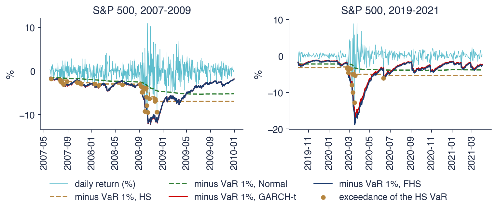

Academia de Studii Economice din București IDA Institute Digital Assets Blockchain Research Center AI4EFin Artificial Intelligence for Energy Finance Academia Română, Institutul de Prognoză Economică MSCA Digital Finance
GPD: Generalised Pareto Distribution (distribuția Pareto generalizată)
HS: Historical Simulation (simularea istorică)
LR: Likelihood Ratio (test) — testul raportului de verosimilitate
MAR32: Market Risk standard, chapter 32 of the Basel Framework (backtesting) — standardul pentru riscul de piață, capitolul 32 din Cadrul Basel (backtesting)
MAR33: Market Risk standard, chapter 33 of the Basel Framework (capital calculation) — standardul pentru riscul de piață, capitolul 33 din Cadrul Basel (calculul capitalului)
POT: Peaks Over Threshold (metoda vîrfurilor peste prag)
SFE: Statistics of Financial Markets, Exercises (Quantlet collection of the textbook) — colecția de Quantlet-uri a manualului Statistics of Financial Markets
Un manager de risc trebuie să răspundă în fiecare zi la două întrebări: cît poate pierde portofoliul mîine și a fost corect răspunsul de ieri? Valoarea expusă la risc (VaR, Value at Risk) răspunde la prima întrebare printr-o cuantilă a distribuției pierderilor, pierderea așteptată în coadă (ES, expected shortfall) prin pierderea medie de dincolo de această cuantilă, iar backtesting-ul răspunde la a doua, comparînd prognozele cu pierderile care au avut loc efectiv. Din 1996, aceste trei instrumente sînt și limbajul reglementării bancare: regulile Basel stabilesc capitalul pentru riscul de piață din VaR-ul sau ES-ul calculat de bancă și îl măresc atunci cînd modelul nu trece backtesting-ul.
Capitolul construiește instrumentele pe date zilnice din 2000–2026 și le judecă în două crize, criza financiară din 2008 și crahul COVID-19 din 2020. Pentru S&P 500, VaR 1% istoric este 3,46%, iar ES 2,5% este 3,76%, în timp ce o distribuție Normală ajustată la aceleași randamente dă 2,80% și 2,81%. Între septembrie 2008 și martie 2009, un VaR 1% Normal pe fereastră mobilă pentru S&P 500 a fost depășit în 21 din 146 de zile, acolo unde un model corect ar fi produs aproximativ 1,5 depășiri; un VaR construit pe o prognoză GARCH a volatilității a fost depășit în 5 zile.
Capitolul reunește astfel cele două direcții anterioare ale cursului: cozile din Capitolul 5 și prognozele volatilității din Capitolul 9. El arată că alegerea distribuției cozii contează mai puțin decît urmărirea volatilității de azi, că o corelație subestimează riscul prăbușirilor simultane și că un an de date separă doar aproximativ un model de risc bun de unul prost.

Randamentele logaritmice zilnice ale S&P 500 (%) în 2007–2009 (stînga) și 2019–2021 (dreapta), împreună cu minus prognozele VaR 1% ale a patru metode: simularea istorică (HS) și distribuția Normală pe o fereastră de 500 de zile, GARCH-t și simularea istorică filtrată (FHS); punctele marchează zilele în care VaR HS a fost depășit.
Rezultatele învățării
Definiți VaR și ES la o probabilitate a cozii \(\alpha\) (VaR 1%, ES 2,5%) și calculați-le pentru distribuția Normală și pentru Student-t.
Enunțați axiomele unei măsuri de risc coerente și arătați printr-un contraexemplu că VaR nu este subaditiv.
Estimați VaR și ES prin simulare istorică, metode parametrice, Cornish–Fisher, EVT, GARCH și simulare istorică filtrată.
Calculați VaR-ul unui portofoliu și explicați de ce corelația nu măsoară riscul prăbușirilor simultane.
Testați un model VaR (backtesting) cu testele Kupiec și Christoffersen și cu semaforul Basel.
Planul capitolului
Măsurarea riscului din coadăRaportul de la ora 16:15, RiskMetrics, regulile Basel și cele două crize folosite ca teste de stres.
VaR și ES: definițiiPierderi, orizont și nivel; VaR ca o cuantilă, ES ca o medie a cozii; formulele explicite pentru distribuția Normală și Student-t; regula rădăcinii pătrate a timpului.
Măsuri de risc coerenteCele patru axiome, un contraexemplu în care VaR penalizează diversificarea și elicitabilitatea.
Estimarea VaR și ESSimularea istorică și precizia ei, metodele Normală, Student-t, Cornish–Fisher și EVT pe șase serii.
BacktestingSecvența depășirilor, testele Kupiec și Christoffersen, semaforul Basel și backtesting-ul pentru ES.
AI pentru descoperire științificăO întrebare deschisă despre dependența în cozi dintre București și piețele mondiale, rolul AI și verificările.
RezumatRezultatele principale, formulele și întrebări de autoevaluare.
Măsurarea riscului din coadă
Secțiunea arată cum a ajuns un singur număr zilnic să rezume riscul unei bănci. Ea pornește de la cererea președintelui J.P. Morgan pentru un raport zilnic, urmărește VaR de la documentul RiskMetrics din 1994 pînă la regulile de capital Basel din 1996 și 2019 și prezintă cele două crize, 2008 și 2020, în care este testată fiecare metodă a capitolului.
În jurul anului 1990, Dennis Weatherstone, președintele J.P. Morgan, a cerut un singur număr, livrat în fiecare zi la ora 16:15, după închiderea tranzacționării, care să spună cît poate pierde banca a doua zi. Birourile de tranzacționare ale băncii aveau poziții în obligațiuni, valute, acțiuni și instrumente derivate, iar niciun raport separat nu le putea aduna. Răspunsul a devenit valoarea expusă la risc (VaR): o pierdere depășită doar cu o probabilitate mică pe un orizont dat.
În octombrie 1994, banca și-a publicat gratuit metodologia și datele necesare aplicării ei, sub numele RiskMetrics; a patra ediție a documentului tehnic este J.P. Morgan/Reuters (1996). Metoda era intenționat simplă: randamente Normale, o volatilitate estimată printr-o medie mobilă ponderată exponențial (EWMA, exponentially weighted moving average, estimatorul din Capitolul 8) și un VaR la o probabilitate a cozii de 5% pe o zi.
Publicarea a transformat VaR într-un limbaj comun. Băncile, autoritățile de reglementare și administratorii de fonduri își puteau exprima riscul de piață în aceleași unități, o pierdere în bani la o probabilitate dată, și puteau compara poziții care nu aveau altceva în comun. Simplitatea care a făcut metoda populară conține și cele două puncte slabe ale ei, pe care capitolul le examinează pe rînd: distribuția Normală are o coadă prea subțire, iar o cuantilă nu spune nimic despre mărimea pierderilor de dincolo de ea.
Pe scurt
În jurul anului 1990: președintele J.P. Morgan, Dennis Weatherstone, cere un singur număr, în fiecare zi la ora 16:15, care să rezume cît poate pierde banca a doua zi
răspunsul a devenit valoarea expusă la risc (VaR): o pierdere depășită doar cu o probabilitate mică
Octombrie 1994: metodele și datele sînt publicate gratuit sub numele RiskMetrics J.P. Morgan/Reuters (1996)
randamente Normale, volatilitate EWMA (Capitolul 8), VaR la o probabilitate a cozii de 5% pe o zi
VaR a devenit limbajul comun al băncilor, al autorităților de reglementare și al administratorilor de fonduri
Comitetul de la Basel pentru supraveghere bancară (BCBS, Basel Committee on Banking Supervision), găzduit de Banca Reglementelor Internaționale (BIS, Bank for International Settlements) din Basel, stabilește standardele internaționale pentru capitalul băncilor (istoria Comitetului de la Basel). În 1996, comitetul a permis băncilor să calculeze capitalul pentru riscul de piață cu propriile modele VaR (BCBS, 1996a). Regula folosește VaR 1% pe 10 zile, înmulțit cu un factor de cel puțin 3, iar factorul crește dacă modelul nu trece backtesting-ul, adică dacă pierderile efective depășesc VaR prea des (BCBS, 1996b).
În 2019, revizuirea fundamentală a portofoliului de tranzacționare (FRTB, Fundamental Review of the Trading Book) a înlocuit VaR 1% cu ES 2,5% ca bază a cerinței de capital (BCBS, 2019); regula în vigoare este capitolul MAR33 din Cadrul Basel (BCBS, 2023b). Schimbarea răspunde principalei critici aduse VaR: o cuantilă ignoră cît de mari sînt pierderile de dincolo de ea, în timp ce ES face media lor.
Backtesting-ul nu a trecut la ES. Potrivit capitolului MAR32 din Cadrul Basel (BCBS, 2023a), băncile numără în continuare zilele în care pierderea a depășit prognoza VaR, la nivelul băncii și al fiecărui birou de tranzacționare. Motivul este statistic și apare în secțiunea despre măsurile de risc coerente: o prognoză VaR poate fi verificată singură față de pierderile realizate, în timp ce o prognoză ES poate fi verificată doar împreună cu o prognoză VaR.
Pe scurt
BCBS (Basel Committee on Banking Supervision, Comitetul de la Basel pentru supraveghere bancară) are sediul la BIS, în Basel istoria Comitetului de la Basel
1996: băncile pot calcula capitalul pentru riscul de piață cu propriile modele VaR BCBS (1996a)
regula: VaR 1% pe 10 zile, înmulțit cu un factor de cel puțin 3; factorul crește dacă modelul nu trece testul (backtesting) BCBS (1996b)
2019: FRTB (Fundamental Review of the Trading Book, revizuirea fundamentală a portofoliului de tranzacționare) BCBS (2019)
capitalul se calculează din ES 2,5% în loc de VaR 1% (MAR33, BCBS (2023b)); backtesting-ul numără în continuare depășirile VaR (MAR32, BCBS (2023a))
Fotografiile arată cele două crize care încadrează capitolul: sediul Lehman Brothers din New York pe 15 septembrie 2008, ziua falimentului, și districtul financiar pustiu al New York-ului pe 25 martie 2020, în timpul carantinei COVID-19. Cea mai proastă zi a S&P 500 din 2000 încoace a venit în a doua criză: un randament logaritmic zilnic de −12,8% pe 16 martie 2020.
Un model Normal cu volatilitatea de selecție îi atribuie unei asemenea zile o probabilitate practic nulă; Capitolul 5 a măsurat cît de aproape de zero. O măsură de risc construită pe acest model ar fi fost inutilă exact atunci cînd era nevoie de ea.
De aceea, capitolul folosește perioadele septembrie 2008 – martie 2009 și februarie – mai 2020 ca teste de stres pentru fiecare metodă. O metodă care dă cifre rezonabile în anii calmi, dar eșuează în aceste două perioade, nu măsoară riscul din coadă; ea măsoară variația obișnuită.
Cea mai proastă zi a S&P 500 din 2000: \(-12{,}8\%\) pe 16 martie 2020; un model Normal cu volatilitatea de selecție îi dă unei asemenea zile o probabilitate practic nulă
O măsură de risc trebuie judecată în astfel de perioade: folosim 2008 și 2020 ca teste de stres în tot capitolul
Sinteza secțiunii
VaR s-a născut ca răspuns practic la o întrebare de conducere și a devenit standard de reglementare în cîțiva ani: Basel 1996 a calculat capitalul pentru riscul de piață din VaR 1% pe 10 zile, iar FRTB din 2019 l-a înlocuit cu ES 2,5%, păstrînd numărarea depășirilor VaR ca backtesting. Secțiunea următoare definește precis ambele măsuri și le calculează pentru S&P 500.
VaR și ES: definiții
Secțiunea definește VaR și ES ca funcții de distribuția profitului și pierderii, le calculează întîi pe un eșantion de 100 de zile și apoi pe 26 de ani de randamente S&P 500, deduce formulele explicite pentru distribuția Normală și pentru Student-t și examinează regula care transformă un VaR pe o zi într-un VaR pe zece zile.
O măsură de risc are nevoie de trei ingrediente. Primul este variabila aleatoare \(X\): profitul sau pierderea (P&L, profit and loss) ori randamentul unei poziții pe un orizont \(h\); în acest capitol \(h\) este o zi, iar \(X\) este randamentul logaritmic zilnic, în procente. Pierderea este \(L = -X\), un număr pozitiv cînd poziția pierde bani. Ambele convenții apar în literatură, iar cele mai multe erori practice vin din amestecarea lor.
Al doilea ingredient este nivelul \(\alpha\), probabilitatea cozii, de exemplu \(\alpha = 1\%\) sau \(\alpha = 2{,}5\%\). Cursul scrie VaR 1% și ES 2,5%: numărul din denumire este întotdeauna probabilitatea cozii. Textele de reglementare și programele software vorbesc adesea de „VaR 99%”, numind nivelul de încredere complementar; cele două denumiri descriu același număr, dar cursul folosește doar probabilitatea cozii, astfel încît un număr mai mic înseamnă întotdeauna o pierdere mai extremă.
Al treilea ingredient este cuantila. Cuantila de ordin \(\alpha\) a lui \(X\) este \(q_\alpha(X) = \inf\{x : P(X \le x) > \alpha\}\), definiția din Capitolul 2, valabilă și pentru distribuțiile discrete. Pentru o funcție de repartiție continuă \(F\), ea este simplu \(q_\alpha = F^{-1}(\alpha)\). Pentru \(\alpha\) mic, cuantila randamentelor este un număr negativ: randamentul sub care se află cele mai proaste \(\alpha\) dintre zile.
Pe scurt
\(X\): P&L (profit and loss, profitul sau pierderea) ori randamentul unei poziții pe un orizont \(h\) (aici o zi, în %)
pierderea este \(L = -X\): un număr pozitiv cînd poziția pierde bani
Nivelul\(\alpha\) este probabilitatea cozii: \(\alpha = 1\%\) sau \(\alpha = 2{,}5\%\)
scriem VaR 1% și ES 2,5%: numărul din denumire este întotdeauna probabilitatea cozii
\(q_\alpha(X) = \inf\{x : P(X \le x) > \alpha\}\): cuantila de ordin \(\alpha\) a lui \(X\) (Capitolul 2)
pentru o funcție de repartiție continuă \(F\): \(q_\alpha = F^{-1}(\alpha)\), un număr negativ pentru \(\alpha\) mic
Valoarea expusă la risc la nivelul \(\alpha\) este opusul cuantilei de ordin \(\alpha\) a P&L-ului:
\[\mathrm{VaR}_\alpha(X) = -q_\alpha(X).\]
(10.1)
Semnul minus transformă cuantila într-o pierdere pozitivă. Din definiție rezultă \(P(L > \mathrm{VaR}_\alpha) \le \alpha\): pierderea depășește VaR cu probabilitatea cel mult \(\alpha\). Un VaR 1% zilnic de 3% spune, așadar, că o pierdere mai mare de 3% apare cam într-o zi din o sută. În bani, o poziție cu valoarea \(W\) are un VaR de \(W \times \mathrm{VaR}(\%)/100\).
La fel de important este ce nu spune VaR. El nu spune nimic despre mărimea pierderilor de dincolo de el: două poziții cu aceeași cuantilă de 1%, dintre care una pierde 4% în zilele proaste, iar cealaltă 40%, au același VaR. Iar VaR nu este pierderea maximă. Prin construcție, el este depășit în aproximativ o fracțiune \(\alpha\) dintre zile; un VaR care nu este depășit niciodată nu este un VaR prudent, ci unul greșit, cum arată testele din secțiunea Backtesting.
Pierderea așteptată în coadă răspunde la întrebarea pe care VaR o lasă deschisă: cît de mare este pierderea în zilele proaste? Ea se definește ca media valorilor VaR la toate nivelurile sub \(\alpha\):
unde variabila de integrare \(u\) parcurge nivelurile cozii de la 0 la \(\alpha\). Pentru o distribuție continuă, definiția se reduce la \(\mathrm{ES}_\alpha = -E[X \mid X \le q_\alpha(X)]\): pierderea medie din cele mai proaste \(\alpha\) dintre zile. Aceeași mărime apare și sub alte denumiri, VaR condiționat (CVaR, conditional VaR), tail VaR (TVaR) sau expected tail loss; pentru distribuțiile continue ele coincid.
Două proprietăți decurg din definiție. Deoarece cuantilele \(q_u\) cu \(u < \alpha\) se află toate sub \(q_\alpha\), media lor se află și ea sub \(q_\alpha\), deci \(\mathrm{ES}_\alpha \ge \mathrm{VaR}_\alpha\) la același nivel. Iar ES privește în interiorul cozii: două distribuții cu același VaR, dar cu cozi diferite, una care se termină brusc și una cu pierderi catastrofale rare, au ES diferit. Forma integrală (10.2) este definiția generală; ea rămîne valabilă și pentru distribuțiile discrete, unde media condiționată poate da un număr diferit și cu proprietăți mai slabe.
Pe scurt
Definiție: \(\mathrm{ES}_\alpha(X) = -\dfrac{1}{\alpha}\displaystyle\int_0^\alpha q_u(X)\,du\): media valorilor VaR la toate nivelurile sub \(\alpha\)
pentru o distribuție continuă: \(\mathrm{ES}_\alpha = -E[X \mid X \le q_\alpha(X)]\), pierderea medie din cele mai proaste \(\alpha\) dintre zile
\(u\): variabila de integrare, un nivel al cozii care parcurge valorile de la 0 la \(\alpha\)
alte denumiri: CVaR (conditional VaR), TVaR (tail VaR), expected tail loss
Proprietăți
\(\mathrm{ES}_\alpha \ge \mathrm{VaR}_\alpha\) la același nivel \(\alpha\)
ES privește în interiorul cozii: două distribuții cu același VaR, dar cu cozi diferite, au ES diferit
Pe un eșantion, cuantila este înlocuită de o statistică de ordine. O poziție are 100 de randamente zilnice, iar cele mai proaste cinci sînt −6,1%, −4,8%, −4,2%, −3,9% și −3,5%. Cuantila empirică de nivel \(\alpha\) este al \(k\)-lea cel mai mic randament, cu \(k = \lceil n\alpha \rceil\), unde \(\lceil\cdot\rceil\) înseamnă rotunjirea în sus la următorul întreg.
Pentru VaR 1%, \(k = \lceil 100 \times 0{,}01 \rceil = 1\): cuantila empirică este cel mai prost randament, iar \(\mathrm{VaR}_{1\%} = 6{,}1\%\). O singură observație decide această estimare, deci cu 100 de zile ea este foarte imprecisă: un alt eșantion de 100 de zile ar avea aproape sigur o altă cea mai proastă zi. Pentru ES 2,5%, \(k = \lceil 2{,}5 \rceil = 3\), iar estimarea este media celor mai mari trei pierderi, \(\mathrm{ES}_{2{,}5\%} = (6{,}1 + 4{,}8 + 4{,}2)/3 = 5{,}03\%\), în timp ce \(\mathrm{VaR}_{2{,}5\%}\) este a treia cea mai mare pierdere, 4,2%.
Exprimat în bani, o poziție de 1 milion de lei are un VaR 1% de 61 000 de lei: într-o zi din o sută, pierderea este mai mare. Exemplul arată și de ce ES 2,5% și VaR 1% formează o pereche firească: ES 2,5% folosește trei observații acolo unde VaR 1% folosește una, iar valoarea lui, 5,03%, se află între cea mai mare și a treia cea mai mare pierdere.
Pe scurt
O poziție are 100 de randamente zilnice; cele mai proaste cinci sînt \(-6{,}1\), \(-4{,}8\), \(-4{,}2\), \(-3{,}9\), \(-3{,}5\) (în %)
cuantila empirică de nivel \(\alpha\): al \(k\)-lea cel mai mic randament, \(k = \lceil n\alpha \rceil\) (\(\lceil\cdot\rceil\): rotunjire în sus)
VaR 1%: \(k = \lceil 100 \times 0{,}01 \rceil = 1\), deci \(\mathrm{VaR}_{1\%} = 6{,}1\%\)
o singură observație decide VaR 1%: cu 100 de zile, estimarea este foarte imprecisă
ES 2,5%: \(k = \lceil 2{,}5 \rceil = 3\); media celor mai mari trei pierderi
Întrebare pentru sală Ce se întîmplă cu VaR 1% Normal față de cel istoric cînd trecem la celelalte cinci serii?
Răspuns
Rămîne sub cel istoric peste tot, cu 14–24%: 22% la DAX, 23% la BET, 24% la Bitcoin, 22% la TLV, 14% la SNP (S&P 500: 19%). Doi parametri, media și abaterea standard, nu pot descrie o coadă groasă: distribuția Normală pune prea puțină probabilitate dincolo de 2,3 abateri standard.
Întrebare pentru sală VaR 1% al randamentelor S&P 500 pe 10 zile: este peste sau sub √10 × VaR-ul pe o zi (10,93%)?
Răspuns
Sub: 10,37%, adică de 3,00 ori VaR-ul pe o zi, față de √10 = 3,16. Suma a 10 randamente cu cozi groase este mai aproape de distribuția Normală (CLT), iar autocorelația de ordinul 1 a randamentelor S&P 500 este −0,10, deci zilele succesive se compensează parțial. La BET raportul este 3,86, peste √10: autocorelația lui este +0,11.
Întrebare pentru sală Cu ultimele 250 de zile ale S&P 500, pe a cîta cea mai proastă zi se sprijină VaR 1% istoric?
Răspuns
Pe a treia: k = ⌈250 × 0,01⌉ = ⌈2,5⌉ = 3. Cu 250 de zile, VaR 1% depinde de 3 observații, iar ES 2,5% de 7 (⌈6,25⌉); pe tot eșantionul de 6 714 zile, VaR 1% este a 68-a cea mai proastă zi.
Întrebare pentru sală Pe ultimele 500 de zile ale S&P 500, intervalul bootstrap de 95% pentru VaR 1% este de cîte ori mai lat decît pe toate cele 6 714 zile?
Răspuns
De circa 6 ori: [1,99; 4,96], adică 2,97 puncte procentuale, față de [3,18; 3,66], adică 0,48. Regula √n ar da √(6 714/500) = 3,7; intervalul este mai lat, pentru că VaR 1% se sprijină pe a 5-a cea mai proastă zi, iar între cele cinci zile proaste ale ferestrei sînt salturi mari. Pe ultimele 250 de zile intervalul are doar 1,12 puncte: o fereastră fără zile extreme pare precisă, deși are mai puține observații.
Întrebare pentru sală S&P 500: S = −0,35, K = 10,7. Cum se compară VaR 1% Cornish–Fisher cu cel istoric (3,46%)?
Răspuns
Este aproape dublu: 6,08%. Termenul de boltire (z³ − 3z)K/24 = −2,49 adaugă singur mai mult decît distanța dintre cuantila Normală și cea empirică; dezvoltarea este o corecție mică în jurul distribuției Normale și nu mai este valabilă cînd K trece de 10.
Întrebare pentru sală Ridicăm pragul EVT al S&P 500 de la cuantila de 90% la cea de 97,5% a pierderilor. Ce face VaR 1% EVT?
Răspuns
Se schimbă puțin: 3,56% la 90%, 3,54% la 95%, 3,50% la 97,5% (3,59% la 85%). ξ̂ crește de la 0,16 la 0,23, dar la 1% suntem încă aproape de datele folosite; diferența apare la 0,1%, unde VaR EVT trece de la 6,91% la 7,13%.
Întrebare pentru sală Pe S&P 500 din 2000, VaR 1% istoric este 3,46%. Cît este ES 2,5% istoric?
Răspuns
3,76%: media celor mai proaste 168 de zile, cu semn schimbat. VaR 2,5% = 2,51% este doar marginea acestei cozi, iar ES 2,5% face media întregii cozi, inclusiv a zilelor din 2008 și 2020. ES 2,5% și VaR 1% sînt apropiate (3,76% față de 3,46%), de aceea FRTB a putut înlocui VaR 1% cu ES 2,5% fără să schimbe mult nivelul capitalului (BCBS (2019); BCBS (2023b)).
Histograma arată cele 6 714 randamente logaritmice zilnice ale S&P 500 din 2000 încoace. Zona hașurată conține cele mai proaste 2,5% dintre zile. Linia continuă marchează minus VaR 1% istoric, la −3,46%, iar linia întreruptă minus ES 2,5%, la −3,76%; VaR 2,5% istoric, marginea dreaptă a zonei hașurate, este 2,51%.
Cele două linii răspund la întrebări diferite. VaR 1% este un singur punct al cozii: 1% dintre zile se află în stînga lui, oriunde s-ar afla. ES 2,5% face media întregii cozi hașurate, inclusiv a zilelor extreme din 2008 și 2020, abia vizibile ca bare izolate departe în stînga; dacă acele zile ar fi fost de două ori mai proaste, VaR 1% ar fi rămas neschimbat, iar ES ar fi crescut.
Pentru o poziție de 1 milion de lei în indice, cele două cifre înseamnă un VaR 1% de circa 34 552 de lei și un ES 2,5% de circa 37 613 lei. ES 2,5% este mai mare decît VaR 1%, deși se referă la o probabilitate mai puțin extremă, deoarece face media pierderilor de dincolo de cuantila de 2,5%, iar unele dintre aceste pierderi sînt mult mai mari decît 3,46%.
Pe scurt
Randamente logaritmice zilnice din 2000 (6 714 zile); estimări istorice: VaR 1% \(= 3{,}46\%\), VaR 2,5% \(= 2{,}51\%\), ES 2,5% \(= 3{,}76\%\)
Interpretare: ES 2,5% face media întregii cozi hașurate, inclusiv a zilelor extreme din 2008 și 2020; VaR 1% este un singur punct din această coadă
Pentru o poziție de 1 milion de lei în indice: VaR 1% circa 34 552 de lei, ES 2,5% circa 37 613 lei
Dacă \(X \sim N(\mu, \sigma^2)\), ambele măsuri au formule explicite. Cu \(z_\alpha = \Phi^{-1}(\alpha)\) cuantila Normală standard, unde \(\Phi\) și \(\varphi\) sînt funcția de repartiție și densitatea lui \(N(0, 1)\),
Formula pentru ES se sprijină pe media cozii distribuției Normale standard, \(E[Z \mid Z \le z] = -\varphi(z)/\Phi(z)\). Derivarea folosește \(\varphi'(z) = -z\varphi(z)\): integrala lui \(t\varphi(t)\) de la \(-\infty\) la \(z\) este \(-\varphi(z)\), iar împărțirea la \(P(Z \le z) = \Phi(z) = \alpha\) dă media condiționată.
Merită reținute constantele: \(z_{0{,}01} = -2{,}326\),\(z_{0{,}025} = -1{,}960\),\(\varphi(z_{0{,}025}) = 0{,}0584\), iar factorul ES la 2,5% este \(\varphi(z_{0{,}025})/0{,}025 = 2{,}338\). Cu \(\mu = 0\), raportul dintre ES 2,5% și VaR 1% este \(2{,}338/2{,}326 = 1{,}005\): pentru randamente Normale, cele două măsuri sînt practic egale. De aceea FRTB a ales ES 2,5% pentru a înlocui VaR 1%: pentru date Normale, cerința de capital rămîne aproximativ aceeași, iar pentru date cu cozi groase, unde ES 2,5% depășește VaR 1%, ea crește.
Pe scurt
\(X \sim N(\mu, \sigma^2)\), \(z_\alpha = \Phi^{-1}(\alpha)\) (\(\Phi\), \(\varphi\): funcția de repartiție și densitatea lui \(N(0,1)\))
Momentele de selecție ale randamentelor zilnice ale S&P 500 din 2000 sînt \(\hat\mu = 0{,}025\%\) și \(\hat\sigma = 1{,}21\%\). Introduse în (10.3), ele dau VaR 1% Normal \(= -(0{,}025 - 2{,}326 \times 1{,}21) = -0{,}025 + 2{,}822 = 2{,}80\%\) și ES 2,5% Normal \(= -0{,}025 + 2{,}338 \times 1{,}21 = -0{,}025 + 2{,}836 = 2{,}81\%\).
Datele spun altceva. Simularea istorică dă VaR 1% = 3,46% și ES 2,5% = 3,76%. VaR 1% Normal este prea mic cu 19%, deoarece coada distribuției Normale este prea subțire (Capitolul 2). ES 2,5% Normal este și mai departe de date, cu aproximativ un sfert sub valoarea istorică, deoarece coada Normală nu conține nimic asemănător zilelor extreme incluse în media istorică.
Doi parametri, o medie și o abatere standard, sînt ajustați la centrul distribuției, acolo unde se află cele mai multe observații; ei nu pot descrie și coada. Metodele din secțiunile următoare urmează unul din două drumuri: schimbă distribuția (Student-t, Cornish–Fisher, EVT) sau schimbă datele folosite (simularea istorică, filtrarea volatilității).
Pe scurt
Momentele de selecție ale randamentelor zilnice din 2000: \(\hat\mu = 0{,}025\), \(\hat\sigma = 1{,}21\) (în %)
Distribuția Student-t din Capitolul 2 are o coadă de tip putere. Scriem \(X = m + s\,T\), cu \(T \sim t_\nu\), poziția \(m\), scala \(s\) și \(\nu\) grade de libertate; fie \(t_\alpha = t_\nu^{-1}(\alpha)\) cuantila și \(f_\nu\) densitatea lui \(t_\nu\). Atunci
Condiția \(\nu > 1\) este necesară pentru ca media, deci și ES, să existe. Scala \(s\) nu este abaterea standard: varianța lui \(X\) este \(s^2\nu/(\nu - 2)\), deci o distribuție t standardizată, cu varianța 1, are \(s = \sqrt{(\nu - 2)/\nu}\). Această standardizare reapare în modelul GARCH-t din secțiunea despre VaR condiționat.
Ajustată la S&P 500 prin verosimilitate maximă, distribuția are poziția \(\hat m = 0{,}068\), scala \(\hat s = 0{,}703\) și \(\hat\nu = 2{,}67\) grade de libertate. Cuantila este \(t_{0{,}01} = -5{,}023\), deci VaR 1% \(= -(0{,}068 + 0{,}703 \times (-5{,}023)) = 3{,}46\%\), exact valoarea istorică. Factorul ES este 5,720, deci ES 2,5% \(= -0{,}068 + 0{,}703 \times 5{,}720 = 3{,}95\%\), peste valoarea istorică de 3,76%. Cu \(\nu < 3\), coada estimată este foarte groasă: se potrivește cu cuantila de 1%, dar dincolo de ea distribuția t plasează mai multă masă decît arată datele.
Pe scurt
\(X = m + s\,T\), \(T \sim t_\nu\) (poziția \(m\), scala \(s\), \(\nu\) grade de libertate, Capitolul 2); \(t_\alpha = t_\nu^{-1}(\alpha)\), \(f_\nu\) densitatea lui \(t_\nu\)
VaR-ul de reglementare are un orizont de 10 zile, în timp ce datele și modelele sînt zilnice. Regula rădăcinii pătrate a timpului (square-root-of-time rule) face legătura: \(\mathrm{VaR}^{(h)} \approx \sqrt{h}\,\mathrm{VaR}^{(1)}\). Regula este exactă pentru randamente Normale i.i.d. cu media zero, deoarece randamentul pe \(h\) zile este atunci Normal, cu abaterea standard \(\sigma\sqrt{h}\), iar fiecare cuantilă se scalează cu \(\sqrt{h}\). Basel 1996 cerea un VaR pe 10 zile, obținut de obicei din VaR-ul pe o zi prin factorul \(\sqrt{10} = 3{,}162\).
Pentru S&P 500, VaR 1% istoric pe o zi este 3,46%, iar regula dă \(3{,}162 \times 3{,}46 = 10{,}93\%\) pe 10 zile. VaR 1% istoric al randamentelor pe 10 zile suprapuse este 10,37%, ceva mai mic: raportul este 3,00, sub \(\sqrt{10}\). Diferența nu este un accident al eșantionului, ci rezultatul a trei trăsături ale randamentelor reale.
Prima sînt cozile groase. Suma a 10 randamente cu cozi groase este mai aproape de distribuția Normală decît fiecare dintre ele (teorema limită centrală, CLT, central limit theorem), deci boltirea ei este mai mică, iar raportul dintre cuantila ei de 1% și cea zilnică este sub \(\sqrt{10}\). A doua este volatility clustering (Capitolul 9): după o zi liniștită, volatilitatea tinde să revină spre nivelul ei pe termen lung, deci riscul pe 10 zile este mai mare decît \(\sqrt{10}\) ori riscul de azi; după o perioadă turbulentă, volatilitatea tinde să scadă, iar riscul pe 10 zile este mai mic. A treia este autocorelația. Varianța unei sume pe 10 zile este \(\sigma^2\bigl(10 + 2\sum_{k=1}^{9}(10-k)\rho_k\bigr)\), deci o autocorelație de ordinul întîi negativă o micșorează, iar una pozitivă o mărește. S&P 500 are \(\hat\rho_1 = -0{,}10\): zilele succesive se compensează parțial, ceea ce se adaugă efectului cozilor groase. BET are \(\hat\rho_1 = +0{,}11\) (tranzacționarea nesincronă a acțiunilor din indice), iar raportul lui este 3,86, peste \(\sqrt{10}\). Regula este o convenție a reglementării, nu o proprietate a datelor.
Pe scurt
Regula rădăcinii pătrate a timpului: \(\mathrm{VaR}^{(h)} \approx \sqrt{h}\,\mathrm{VaR}^{(1)}\)
exactă pentru randamente Normale i.i.d. cu media 0: randamentul pe \(h\) zile are abaterea standard \(\sigma\sqrt{h}\)
Basel 1996: VaR pe 10 zile, de obicei scalat de la o zi cu \(\sqrt{10} = 3{,}162\)
S&P 500, simulare istorică
o zi: 3,46%; scalat: \(3{,}162 \times 3{,}46 = 10{,}93\%\)
VaR 1% al randamentelor pe 10 zile suprapuse: 10,37%
De ce regula nu funcționează în general
cozi groase: suma a 10 randamente cu cozi groase este mai aproape de Normală (CLT, teorema limită centrală), deci raportul cuantilelor este sub \(\sqrt{10}\)
volatility clustering: după o zi liniștită, riscul pe 10 zile este mai mare decît \(\sqrt{10}\) ori riscul de azi, după o perioadă turbulentă este mai mic (Capitolul 9)
Sinteza secțiunii
VaR (10.1) este o cuantilă a pierderii, iar ES (10.2) pierderea medie de dincolo de ea. Pentru S&P 500 din 2000, valorile istorice sînt VaR 1% = 3,46% și ES 2,5% = 3,76%; distribuția Normală dă 2,80% și 2,81%, iar o distribuție Student-t reproduce VaR, dar supraestimează ES. Secțiunea următoare întreabă ce proprietăți ar trebui să aibă o măsură de risc bună și arată că VaR îi lipsește una dintre ele.
Măsuri de risc coerente
Secțiunea judecă VaR și ES după două criterii teoretice. Primul, coerența, întreabă dacă o măsură de risc se comportă rezonabil atunci cînd pozițiile sînt scalate sau combinate; cele patru axiome ale lui Artzner, Delbaen, Eber și Heath o definesc, iar un contraexemplu cu două obligațiuni arată că VaR o poate încălca. Al doilea, elicitabilitatea, întreabă dacă prognozele unei măsuri pot fi comparate cu rezultatele, iar aici ordinea celor două măsuri se inversează.
Artzner et al. (1999) definesc o măsură de risc \(\rho\) ca o funcție care asociază unei pierderi \(L\) capitalul care face poziția acceptabilă pentru o autoritate de reglementare. Ei numesc \(\rho\)coerentă dacă satisface patru axiome. Monotonia (monotonicity): dacă \(L_1 \le L_2\) în orice stare a lumii, atunci \(\rho(L_1) \le \rho(L_2)\). Invarianța la translație (translation invariance): \(\rho(L + c) = \rho(L) + c\) pentru o sumă sigură \(c\), deci adăugarea unei pierderi sigure mărește capitalul exact cu acea sumă. Omogenitatea pozitivă (positive homogeneity): \(\rho(\lambda L) = \lambda\rho(L)\) pentru \(\lambda > 0\), deci dublarea unei poziții îi dublează capitalul. Subaditivitatea (subadditivity): \(\rho(L_1 + L_2) \le \rho(L_1) + \rho(L_2)\).
Primele trei axiome sînt aproape necontestate. Subaditivitatea poartă conținutul economic: combinarea a două poziții nu creează niciodată risc, deci diversificarea nu adaugă niciodată risc. Ea are o consecință practică pentru o bancă: suma capitalurilor calculate separat pentru fiecare divizie este o margine superioară pentru capitalul întregii bănci, iar capitalul poate fi alocat divizie cu divizie. O măsură care nu este subaditivă ar putea face ca o bancă fuzionată să pară mai riscantă decît cele două jumătăți ale ei și ar recompensa împărțirea artificială a unui portofoliu pentru a reduce capitalul.
Fotografia îl arată pe Freddy Delbaen, unul dintre cei patru autori, în 1997. Axiomele au fost publicate în 1999 în Mathematical Finance și au schimbat întrebarea despre măsurile de risc din „ce număr este intuitiv?” în „ce proprietăți trebuie să aibă numărul?”.
Pe scurt
Artzner et al. (1999): o măsură de risc \(\rho\) asociază unei pierderi \(L\) capitalul care o face acceptabilă; \(\rho\) este coerentă dacă
Două obligațiuni independente pierd fiecare 100 dacă emitentul intră în neplată, ceea ce se întîmplă cu probabilitatea 4%, și 0 în rest; nivelul este \(\alpha = 5\%\). Pentru o obligațiune, \(P(L > 0) = 4\% \le 5\%\), deci cuantila de 5% a pierderii este 0, iar \(\mathrm{VaR}_{5\%} = 0\) pentru fiecare obligațiune. Un manager de risc care folosește VaR nu ar vedea niciun risc în niciuna dintre ele.
Pentru portofoliul format din ambele obligațiuni, pierderea este 200 dacă ambele intră în neplată, cu probabilitatea \(0{,}04^2 = 0{,}16\%\), și 100 dacă exact una intră în neplată, cu probabilitatea \(2 \times 0{,}04 \times 0{,}96 = 7{,}68\%\). Acum \(P(L > 0) = 7{,}84\% > 5\%\), deci VaR-ul portofoliului este 100. Deoarece \(\mathrm{VaR}_{5\%}(L_1 + L_2) = 100 > 0 + 0\), VaR penalizează diversificarea: deținerea ambelor obligațiuni pare mai riscantă decît suma deținerilor separate.
ES 5% este media celor mai proaste 5% dintre rezultate. Pentru o obligațiune, cele mai proaste 5% sînt formate din cele 4% stări de neplată, cu pierderea 100, și 1% dintre stările cu pierderea 0, deci \(\mathrm{ES}_{5\%} = (4\% \times 100 + 1\% \times 0)/5\% = 80\). Pentru portofoliu, cele mai proaste 5% sînt formate din 0,16% cu pierderea 200 și 4,84% cu pierderea 100, deci \(\mathrm{ES}_{5\%} = (0{,}16\% \times 200 + 4{,}84\% \times 100)/5\% = 103{,}2\). Deoarece \(103{,}2 \le 80 + 80\), ES este aici subaditiv și vede riscul de neplată al fiecărei obligațiuni, pe care VaR îl ignoră complet.
Pe scurt
Două obligațiuni independente; fiecare pierde 100 cu probabilitatea 4% (neplată) și 0 în rest; nivelul \(\alpha = 5\%\)
o obligațiune: \(P(L > 0) = 4\% \le 5\%\), deci \(\mathrm{VaR}_{5\%} = 0\) pentru fiecare
Ambele obligațiuni: \(P(L = 200) = 0{,}16\%\), \(P(L = 100) = 7{,}68\%\), deci \(P(L > 0) = 7{,}84\% > 5\%\)
ES satisface toate cele patru axiome (Acerbi & Tasche, 2002). Motivul se vede în (10.2): ES este o medie a cuantilelor pe coadă, iar mediile respectă sumele. Mai precis, ES poate fi scris ca cea mai mare pierdere medie pe o mulțime de scenarii reponderate, iar maximul unei sume nu este niciodată mai mare decît suma maximelor.
VaR le satisface pe primele trei; subaditivitatea poate să nu fie îndeplinită. Ea nu este îndeplinită pentru pierderi discrete, cum sînt pierderile din credit și obligațiunile din exemplul precedent, și pentru cozi extrem de groase, cu tail index-ul sub 1 (Capitolul 5), unde pierderea medie este infinită. Este îndeplinită pentru distribuțiile eliptice, ca distribuția Normală și Student-t, iar Daníelsson et al. (2013) arată că în practică este îndeplinită pentru majoritatea randamentelor de acțiuni, al căror tail index este mult peste 1.
ES plătește coerența cu o cerință mai puternică: are nevoie de o pierdere medie finită, în timp ce VaR există pentru orice distribuție. Pentru randamentele zilnice ale acțiunilor, cu tail index-ul în jur de 3, aceasta nu este o constrîngere; pentru unele pierderi operaționale sau din asigurări poate fi.
motivul: ES este o medie a cuantilelor pe coadă, iar media respectă sumele
VaR le satisface pe primele trei; subaditivitatea poate să nu fie îndeplinită
nu este îndeplinită pentru pierderi discrete (credit, obligațiunile de mai sus) și pentru cozi extrem de groase (tail index-ul sub 1, Capitolul 5)
este îndeplinită pentru distribuțiile eliptice (Normală, Student-t) și, în practică, pentru majoritatea randamentelor de acțiuni Daníelsson et al. (2013)
ES are nevoie de o medie finită a pierderilor; VaR există întotdeauna
O statistică este elicitabilă (elicitable) dacă o funcție de pierdere, sau funcție de scor (scoring function), este minimizată în medie de valoarea ei adevărată (Gneiting, 2011). Media este elicitabilă prin eroarea pătratică, mediana prin eroarea absolută. Elicitabilitatea contează deoarece permite ordonarea prognozelor concurente: prognozorul cu scorul mediu mai mic este cel mai bun, iar niciun prognozor nu își poate reduce scorul așteptat raportînd altceva decît valoarea adevărată.
VaR este elicitabil. Funcția de scor este pierderea cuantilă (quantile loss, sau pinball loss)
unde \(v\) este prognoza VaR, \(x\) randamentul realizat, iar \(\mathbf{1}\{\cdot\}\) este 1 dacă evenimentul are loc și 0 altfel. Media ei este minimă acolo unde \(P(X < -v) = \alpha\), adică în \(v = \mathrm{VaR}_\alpha\). Două modele VaR pot fi deci comparate prin media pierderii cuantile a prognozelor lor, cum face secțiunea Backtesting.
ES singur nu este elicitabil (Gneiting, 2011): nicio funcție de scor nu este minimizată în medie de adevăratul ES. Perechea (VaR, ES) este însă elicitabilă împreună (Fissler & Ziegel, 2016). Consecința este practică: prognozele ES se testează împreună cu prognozele VaR, ca în backtesting-ul pentru ES de la sfîrșitul secțiunii Backtesting. Coerența favorizează ES, elicitabilitatea favorizează VaR, iar regulile Basel le folosesc pe amîndouă: ES pentru capital, depășirile VaR pentru backtesting.
Pe scurt
O statistică este elicitabilă dacă o funcție de pierdere (de scor) este minimizată, în medie, de valoarea ei adevărată Gneiting (2011)
consecința: prognozele ES se testează împreună cu prognozele VaR (secțiunea 7)
Sinteza secțiunii
ES este coerent; VaR nu este întotdeauna subaditiv și poate penaliza diversificarea, cum arată exemplul celor două obligațiuni, cu un VaR al portofoliului de 100 față de VaR-uri individuale de 0. VaR este elicitabil prin pierderea cuantilă (10.5), iar ES este elicitabil doar împreună cu VaR. Secțiunea următoare trece de la proprietăți la estimare.
Estimarea VaR și ES
Secțiunea compară cinci metode necondiționate: simularea istorică, distribuțiile Normală și Student-t, dezvoltarea Cornish–Fisher și EVT. Ea calculează fiecare metodă pas cu pas pentru S&P 500, măsoară eroarea de eșantionare a unui VaR istoric prin bootstrap și compară toate metodele pe șase serii: S&P 500, DAX și BET din 2000, Bitcoin din 2014 și două acțiuni de la Bursa de Valori București (BVB), Banca Transilvania (TLV) și OMV Petrom (SNP), din 2010.
Tabelul prezintă cele cinci metode, cu ipoteza și punctul slab al fiecăreia. Simularea istorică (HS, historical simulation) presupune că fereastra trecută este un eșantion din distribuția zilei de mîine; are puține puncte în coadă și nu poate produce o pierdere dincolo de cea mai proastă zi din fereastră. Metoda Normală presupune randamente Normale și are cozi mult prea subțiri. Metoda Student-t permite cozi groase, dar impune o singură formă ambelor cozi. Metoda Cornish–Fisher corectează cuantila Normală prin asimetrie și boltire și nu mai funcționează cînd boltirea este mare. EVT ajustează o distribuție Pareto generalizată (GPD, generalised Pareto distribution) peste un prag ridicat, ca în Capitolul 5, iar punctul ei slab este alegerea pragului.
„Necondiționat” înseamnă că metoda dă același VaR în fiecare zi a ferestrei de estimare: ea descrie distribuția randamentelor ca medie peste perioadele calme și cele turbulente. Metodele condiționate din secțiunea următoare scalează, în schimb, prognoza cu volatilitatea de azi.
Toate metodele folosesc randamente logaritmice zilnice în procente (Capitolul 1) și raportează VaR și ES ca pierderi pozitive. Această convenție comună face cifrele direct comparabile între metode și între serii.
Pe scurt
Metoda
Ipoteza
Punctul slab
simulare istorică (HS)
fereastra trecută este un eșantion din ziua de mîine
puține puncte în coadă; nimic dincolo de cea mai proastă zi
Normală
randamentele sînt Normale
cozi mult prea subțiri
Student-t
randamentele urmează o distribuție Student-t
o singură formă pentru ambele cozi
Cornish–Fisher
cuantila Normală corectată prin asimetrie și boltire
nu mai funcționează pentru boltire mare
EVT (POT)
distribuția GPD peste un prag ridicat (Capitolul 5)
alegerea pragului
„Necondiționat”: același VaR în fiecare zi a ferestrei; metodele condiționate (secțiunea 5) folosesc volatilitatea de azi
Toate metodele: randamente logaritmice zilnice în % (Capitolul 1), VaR și ES ca pierderi pozitive
Simularea istorică este cel mai simplu estimator. Luăm ultimele \(n\) randamente \(r_{t-n+1}, \dots, r_t\) și le ordonăm, \(r_{(1)} \le \dots \le r_{(n)}\). Atunci
Nu se presupune nicio distribuție: distribuția empirică a ferestrei este prognoza. Pentru S&P 500 din 2000, \(n = 6\,714\). VaR 1% folosește \(k = \lceil 67{,}14 \rceil = 68\), iar a 68-a cea mai proastă zi este o pierdere de 3,46%. ES 2,5% este media celor mai proaste \(\lceil 167{,}85 \rceil = 168\) de zile, 3,76%.
Lungimea ferestrei \(n\) este un compromis. O fereastră scurtă, de 250 de zile, reacționează la evenimentele recente, dar VaR 1% al ei este al treilea cel mai prost randament, \(k = \lceil 2{,}5 \rceil = 3\), și se sprijină pe trei observații. O fereastră lungă, aici toate datele, dă o estimare stabilă, care nu reacționează deloc la volatilitatea de azi.
Un artefact specific al unei ferestre fixe este ghost effect. O zi de crah schimbă VaR cînd intră în fereastră, ceea ce este firesc, și îl schimbă din nou, brusc, după \(n\) zile, cînd iese din fereastră, deși în acea zi nu s-a întîmplat nimic. Cu o fereastră de 500 de zile, un crah rămîne în estimare aproximativ doi ani, cum arată prognozele pe fereastră mobilă din secțiunea despre VaR condiționat.
Pe scurt
Algoritmul: luăm ultimele \(n\) randamente \(r_{t-n+1}, \dots, r_t\) și le ordonăm: \(r_{(1)} \le \dots \le r_{(n)}\)
O estimare VaR este o statistică și are o eroare de eșantionare. Bootstrap-ul din Capitolul 2 o măsoară: reeșantionăm cele \(n\) randamente cu întoarcere de 2000 de ori, recalculăm VaR și ES pe fiecare eșantion nou și citim cuantilele de 2,5% și 97,5% ale celor 2000 de valori ca interval de 95%.
Cu toate cele 6 714 zile ale S&P 500, VaR 1% de 3,46% are intervalul de 95% [3,18%; 3,66%], iar ES 2,5% de 3,76% are intervalul [3,46%; 4,07%]. Numai cu ultimele 500 de zile, VaR 1% este 2,75%, cu intervalul [1,99%; 4,96%], iar ES 2,5% este 2,94%, cu intervalul [2,14%; 3,82%]. Cu doi ani de date, intervalul pentru VaR 1% are o lățime de aproape trei puncte procentuale, deoarece estimarea se sprijină pe cele mai proaste cinci zile, \(k = \lceil 500 \times 0{,}01 \rceil = 5\). Intervalul pentru ES este mai îngust, deoarece o medie a 13 observații variază mai puțin decît o singură statistică de ordine.
Intervalele stabilesc scara pentru toate comparațiile care urmează. O diferență între două metode mai mică decît intervalul bootstrap nu arată că o metodă este mai bună; ea poate fi zgomot de eșantionare. Reeșantionarea tratează zilele ca independente, deci, în prezența volatility clustering, incertitudinea reală este mai degrabă mai mare.
Pe scurt
O estimare VaR este o statistică: are o eroare de eșantionare; o măsurăm prin bootstrap (Capitolul 2)
reeșantionăm cele \(n\) randamente cu întoarcere de 2000 de ori, recalculăm VaR și ES și citim cuantilele de 2,5% și 97,5%
S&P 500, toate cele 6 714 zile: VaR 1% \(= 3{,}46\%\), intervalul de 95% [3,18; 3,66]; ES 2,5% \(= 3{,}76\%\), [3,46; 4,07]
ultimele 500 de zile: VaR 1% \(= 2{,}75\%\), [1,99; 4,96]; ES 2,5% \(= 2{,}94\%\), [2,14; 3,82]
Cu doi ani de date, intervalul pentru VaR 1% are o lățime de peste 2 puncte procentuale: VaR 1% se bazează pe 5 observații
Interpretare: diferențele dintre metode mai mici decît intervalul bootstrap nu dovedesc că o metodă este mai bună
Cornish & Fisher (1938) corectează cuantila Normală \(z = z_\alpha\) cu asimetria \(S\) și cu excesul de boltire \(K\), coeficientul de boltire minus 3:
Dezvoltarea este o serie în cumulanții de ordin superior în jurul cuantilei Normale. În \(z_{0{,}01} = -2{,}326\), o asimetrie \(S\) negativă și un exces de boltire \(K\) pozitiv împing amîndouă cuantila mai departe în coada stîngă, deci VaR crește peste valoarea Normală.
Pentru S&P 500, \(S = -0{,}35\) și \(K = 10{,}7\). Numai termenul de boltire este \((z^3 - 3z)K/24 \approx -2{,}50\), mai mare decît cuantila Normală însăși, iar cuantila corectată este \(z_{CF} = -5{,}03\), ceea ce dă un VaR 1% de 6,08%, față de valoarea istorică de 3,46%. Corecția a depășit valoarea corectă cu mai mult decît o subestima metoda Normală.
Dezvoltarea este un instrument pentru corecții mici: este precisă cînd distribuția este apropiată de cea Normală și termenii de corecție sînt mici în raport cu \(z\). Cu un exces de boltire de peste 10, termenii nu mai sînt mici, iar dezvoltarea ajunge mult peste valoarea corectă. Metoda este utilă doar cînd \(|S|\) și \(K\) sînt moderate, de exemplu pentru randamente lunare sau pentru portofolii diversificate.
Pe scurt
Cornish & Fisher (1938): corectăm cuantila Normală \(z = z_\alpha\) cu asimetria \(S\) și excesul de boltire \(K\) (coeficientul de boltire minus 3)
Metoda vîrfurilor peste prag (POT, peaks over threshold) din Capitolul 5 modelează doar coada. Cu pierderile \(L = -r\) și un prag \(u\) fixat la cuantila de 90% a pierderilor, ca la McNeil & Frey (2000), excesele \(L - u\) peste \(u\) urmează aproximativ o distribuție GPD cu forma \(\xi\) și scala \(\beta\). Estimatorul cozii dă atunci
unde \(n\) este numărul de zile, iar \(N_u\) numărul exceselor. Raportul \(n\alpha/N_u\) compară probabilitatea-țintă a cozii cu ponderea zilelor de peste prag; o formă \(\xi > 0\) înseamnă o coadă groasă, de tip Pareto.
Pentru S&P 500, \(u = 1{,}26\%\),\(N_u = 672\) de excese (10,0% dintre zile), \(\hat\xi = 0{,}164\) și \(\hat\beta = 0{,}820\). Pentru VaR 1%, \(n\alpha/N_u = 0{,}0999\) și \(0{,}0999^{-\hat\xi} = 1{,}461\); cu \(\hat\beta/\hat\xi = 4{,}988\), VaR 1% este \(1{,}26 + 4{,}988 \times (1{,}461 - 1) = 3{,}56\%\). ES 2,5% este 3,77%. Ambele sînt apropiate de valorile istorice, 3,46% și 3,76%.
La 1% și la 2,5%, estimările EVT și cele istorice coincid deoarece amîndouă sînt determinate de aceleași cîteva sute de observații din coadă. EVT aduce un plus mai departe în coadă: netezește coada cu un model cu doi parametri și extrapolează dincolo de cea mai proastă zi observată, ceea ce o face metoda potrivită pentru VaR 0,1% și pentru testele de stres.
Pe scurt
Pierderile \(L = -r\); pragul \(u\) = cuantila de 90% a pierderilor McNeil & Frey (2000); excesele \(L - u\) peste \(u\) urmează o distribuție GPD (Pareto generalizată) cu forma \(\xi\) și scala \(\beta\)
\(\mathrm{VaR}_\alpha = u + \dfrac{\beta}{\xi}\Big[\Big(\dfrac{n\alpha}{N_u}\Big)^{-\xi} - 1\Big]\), \(\mathrm{ES}_\alpha = \dfrac{\mathrm{VaR}_\alpha + \beta - \xi u}{1 - \xi}\) (\(N_u\): numărul de excese)
\(n\): numărul de zile; \(n\alpha/N_u\): probabilitatea cozii raportată la ponderea exceselor; \(\xi > 0\): o coadă groasă
VaR pe metode, eșantioanele complete, în % (K: excesul de boltire)
Întrebare pentru sală La VaR 5%, mai este VaR-ul Normal sub cel istoric?
Răspuns
Nu: la 5% VaR-ul Normal este peste cel istoric pentru toate cele șase serii, cu 3–16% (S&P 500: 1,97% față de 1,85%). O distribuție cu cozi groase și aceeași varianță are mai multă probabilitate în centru și în coada extremă și mai puțină pe „umeri”: cuantila ei de 5% este mai aproape de 0 decît cea Normală.
ES pe metode, eșantioanele complete, în %
Întrebare pentru sală Pentru distribuția Normală, ES 2,5% / VaR 1% = 1,005. Pe date, cu cît depășește ES 2,5% istoric VaR 1% istoric?
Răspuns
Cu 1,5–10,5%, după serie (DAX 1,5%, BET 10,5%, din valorile nerotunjite). ES 2,5% istoric face media unei cozi mai lungi decît prevede distribuția Normală, deci raportul trece de 1,005.
Întrebare pentru sală S&P 500, 18 septembrie 2026: cum se compară VaR 1% GARCH-t pentru ziua următoare cu VaR 1% istoric (3,46%)?
Răspuns
Este cam jumătate: 1,75%. σ(t + 1) = 0,714% este mult sub abaterea standard de selecție de 1,21%: piața este liniștită. FHS dă 1,91%, pentru că reziduurile standardizate au cuantila de 1% −2,787, mai jos decît −2,557 pentru Student-t estimată.
Prognoze pentru ziua de după 18 septembrie 2026, în %
Întrebare pentru sală Pentru care dintre cele șase serii este VaR 1% GARCH-t de mîine peste VaR 1% istoric?
Răspuns
BET (4,51% față de 4,14%), TLV (7,18% față de 5,11%) și SNP (5,06% față de 4,29%): pe acestea volatilitatea curentă este mare. Pe S&P 500, DAX și Bitcoin perioada este liniștită.
Întrebare pentru sală La α = 0,1%, care metodă dă cel mai mare VaR pentru S&P 500?
Răspuns
Cornish–Fisher: 15,06%, aproape dublu față de valoarea istorică de 7,90%. Student-t dă 8,58%, EVT 6,91%, distribuția Normală doar 3,72%. La α = 5% toate metodele sînt între 1,67% și 1,97%.
Graficul arată, pentru S&P 500 (stînga) și BET (dreapta), VaR-ul fiecărei metode ca funcție de probabilitatea cozii \(\alpha\), de la 5% în stînga la 0,1% în dreapta, pe o axă logaritmică; punctele sînt estimările istorice. Citirea de la stînga la dreapta înseamnă coborîrea tot mai adînc în coadă.
La 5% toate metodele sînt de acord: atît de aproape de centru, forma cozii aproape că nu contează. La 1%, linia Normală se află deja sub puncte, iar distanța crește pe măsură ce \(\alpha\) scade, deoarece cuantila Normală crește doar ca \(\sqrt{2\ln(1/\alpha)}\). La 0,1%, liniile Student-t și EVT rămîn aproape de date, în timp ce linia Cornish–Fisher crește exploziv, la aproximativ dublul valorii istorice.
Graficul rezumă secțiunea într-o singură imagine. Metodele cu o coadă de tip putere, Student-t și EVT, urmează datele pe întreaga gamă de niveluri; metoda Normală greșește cu atît mai mult cu cît coborîm mai adînc în coadă; iar Cornish–Fisher, construită pentru abateri mici de la distribuția Normală, greșește în sens opus.
Pe scurt
Fiecare linie: \(\mathrm{VaR}_\alpha\) al unei metode pentru \(\alpha\) de la 5% la 0,1%; punctele: simularea istorică
Interpretare: la 5% toate metodele sînt de acord; la 1% distribuția Normală dă valori prea mici; la 0,1% Student-t și EVT rămîn aproape de date, iar Cornish–Fisher crește exploziv
Tabelul raportează VaR 1%, în procente, pentru șase serii pe eșantioanele lor complete (S&P 500, DAX și BET din 2000, Bitcoin din 2014, TLV și SNP din 2010), împreună cu excesul de boltire \(K\) și forma GPD \(\hat\xi\). Nivelurile diferă mult, de la 3,46% pentru S&P 500 la 10,54% pentru Bitcoin, dar tiparul dintre metode este același pe fiecare rînd.
Simularea istorică, Student-t și EVT diferă cu cel mult 0,7 puncte procentuale; cea mai mare diferență apare la Bitcoin, unde Student-t dă 11,06%, iar EVT 10,38%. Ținînd seama de intervalele bootstrap de pe slide-urile anterioare, aceste trei metode sînt de acord. VaR-ul Normal este peste tot prea mic, cu 14% pînă la 24%: de la 2,80% față de 3,46% pentru S&P 500 la 7,99% față de 10,54% pentru Bitcoin.
Cornish–Fisher dă de 1,3 pînă la 2,0 ori VaR-ul istoric, de la 5,42% față de 4,20% pentru DAX, care are cel mai mic exces de boltire (6,1), la 10,19% față de 5,11% pentru TLV, care îl are pe cel mai mare (13,5). Cu \(K\) între 6 și 14, dezvoltarea se află în afara domeniului ei de valabilitate pentru fiecare serie; depășirea este cea mai mică pentru DAX și cea mai mare pentru TLV.
Pe scurt
HS
Normală
Student-t
Cornish–Fisher
EVT
\(K\)
\(\hat\xi\)
S&P 500
\(3{,}46\)
\(2{,}80\)
\(3{,}46\)
\(6{,}08\)
\(3{,}56\)
\({10{,}7}\)
\(0{,}16\)
DAX
\(4{,}20\)
\(3{,}26\)
\(3{,}96\)
\(5{,}42\)
\(4{,}05\)
\({6{,}1}\)
\(0{,}12\)
BET
\(4{,}14\)
\(3{,}19\)
\(4{,}06\)
\(7{,}25\)
\(4{,}19\)
\({11{,}1}\)
\(0{,}23\)
Bitcoin
\(10{,}54\)
\(7{,}99\)
\(11{,}06\)
\(18{,}89\)
\(10{,}38\)
\({12{,}0}\)
\(0{,}12\)
TLV
\(5{,}11\)
\(4{,}01\)
\(4{,}63\)
\(10{,}19\)
\(4{,}90\)
\({13{,}5}\)
\(0{,}26\)
SNP
\(4{,}29\)
\(3{,}70\)
\(4{,}26\)
\(7{,}55\)
\(4{,}38\)
\({8{,}9}\)
\(0{,}22\)
Eșantioanele complete (S&P 500, DAX, BET din 2000; Bitcoin din 2014; TLV și SNP din 2010), în %; \(K\): excesul de boltire
HS, Student-t și EVT diferă cu cel mult 0,7 puncte procentuale; VaR-ul Normal este peste tot prea mic cu 14–24%
Cornish–Fisher dă de 1,3 pînă la 2,0 ori VaR-ul istoric: cu \(K\) între 6 și 14, dezvoltarea este în afara domeniului ei de valabilitate
Aceeași comparație pentru ES 2,5% arată cît de mult diferă între metode coada de dincolo de cuantilă. În distribuția Normală, ES 2,5% este aproape exact egal cu VaR 1% (2,81% față de 2,80% pentru S&P 500). În date, ES 2,5% istoric se află între aproximativ 1,5% și 10,5% peste VaR 1% istoric (calculat din valorile nerotunjite), în funcție de serie: cu cît coada de dincolo de cuantila de 1% este mai groasă, cu atît diferența este mai mare.
Pentru S&P 500, DAX, BET și Bitcoin, Student-t dă cel mai mare ES dintre metodele rezonabile; pentru Bitcoin, 13,37% față de valoarea istorică de 10,84%. Cu \(\hat\nu < 3\), distribuția t ajustată are o coadă mai groasă decît datele de dincolo de prag: un singur parametru potrivește bine cuantila de 1%, dar extrapolează apoi prea multă masă în coada extremă.
EVT și simularea istorică sînt de acord la 2,5% pentru fiecare serie, pînă la 0,06 puncte procentuale. Alegerea metodei contează deci mai mult pentru ES decît pentru VaR, deoarece ES depinde de întreaga coadă, iar VaR de un singur punct al ei. Acesta este prețul coerenței lui ES: el este mai sensibil la modelul cozii îndepărtate.
Pe scurt
HS
Normală
Student-t
Cornish–Fisher
EVT
\(K\)
\(\hat\xi\)
S&P 500
\(3{,}76\)
\(2{,}81\)
\(3{,}95\)
\(6{,}65\)
\(3{,}77\)
\({10{,}7}\)
\(0{,}16\)
DAX
\(4{,}26\)
\(3{,}27\)
\(4{,}37\)
\(5{,}81\)
\(4{,}24\)
\({6{,}1}\)
\(0{,}12\)
BET
\(4{,}57\)
\(3{,}21\)
\(4{,}76\)
\(7{,}93\)
\(4{,}57\)
\({11{,}1}\)
\(0{,}23\)
Bitcoin
\(10{,}84\)
\(8{,}03\)
\(13{,}37\)
\(20{,}69\)
\(10{,}90\)
\({12{,}0}\)
\(0{,}12\)
TLV
\(5{,}37\)
\(4{,}03\)
\(5{,}03\)
\(11{,}20\)
\(5{,}35\)
\({13{,}5}\)
\(0{,}26\)
SNP
\(4{,}70\)
\(3{,}72\)
\(4{,}57\)
\(8{,}18\)
\(4{,}71\)
\({8{,}9}\)
\(0{,}22\)
Distribuția Normală: ES 2,5% este aproape egal cu VaR 1% (raportul \(1{,}005\)); datele: ES 2,5% istoric este cu 1,5–10,5% peste VaR 1% istoric (din valorile nerotunjite)
Pentru S&P 500, DAX, BET și Bitcoin, Student-t dă cel mai mare ES dintre metodele rezonabile (Bitcoin: \(13{,}37\%\) față de \(10{,}84\%\)): cu \(\hat\nu < 3\), coada ei este mai groasă decît cea a datelor de dincolo de prag
Interpretare: EVT și HS sînt de acord la 2,5%; metoda contează mai mult pentru ES decît pentru VaR, deoarece ES depinde de întreaga coadă
Pentru VaR 1% și ES 2,5%, simularea istorică, Student-t și EVT sînt de acord pe toate cele șase serii, în timp ce VaR-ul Normal este prea mic cu 14–24%, iar Cornish–Fisher depășește valoarea istorică de 1,3 pînă la 2,0 ori. Bootstrap-ul arată că un VaR 1% istoric pe doi ani de date este incert cu cîteva puncte procentuale. Toate cele cinci metode dau însă același VaR în fiecare zi a ferestrei. Secțiunea următoare face prognoza să depindă de volatilitatea de azi.
VaR condiționat: GARCH și simularea istorică filtrată
Secțiunea combină prognozele volatilității din Capitolul 9 cu modelele cozii din secțiunea precedentă. O prognoză VaR devine produsul dintre volatilitatea de mîine și o cuantilă a inovației standardizate. Secțiunea calculează astfel de prognoze pentru șase serii, evaluează prognoze pe fereastră mobilă din 2005 pînă în 2026 și compară metodele condiționate cu cele necondiționate în crizele din 2008 și 2020.
Volatilitatea apare grupat (Capitolele 8 și 9): zilele liniștite urmează după zile liniștite, iar zilele agitate după zile agitate. Un VaR necondiționat face media celor două regimuri, deci este prea mare în anii liniștiți și prea mic la începutul unei crize, exact atunci cînd contează cel mai mult.
Modelul condiționat scrie randamentul de mîine ca \(r_{t+1} = \mu + \sigma_{t+1}z_{t+1}\), unde \(\sigma_{t+1}\) este prognoza volatilității făcută azi, iar \(z\) este o inovație i.i.d. cu media 0 și varianța 1. Deoarece singura parte variabilă în timp este scala, măsurile de risc decurg din cele ale lui \(z\):
unde \(q_\alpha(z)\) și \(\mathrm{ES}_\alpha(z)\) sînt cuantila și ES ale inovației standardizate. Modelul are două ingrediente: o prognoză a lui \(\sigma_{t+1}\) și o distribuție pentru \(z\).
Capitolul folosește un model GARCH(1,1) (Bollerslev, 1986) pentru volatilitate și două variante pentru \(z\).GARCH-t presupune o distribuție Student-t standardizată, cu \(\nu\) estimat împreună cu parametrii GARCH. Simularea istorică filtrată (FHS, filtered historical simulation), propusă de Hull & White (1998) și de Barone-Adesi, Giannopoulos & Vosper (1999), folosește distribuția empirică a reziduurilor standardizate (standardised residuals) \(\hat z_t = (r_t - \hat\mu)/\hat\sigma_t\): volatilitatea vine din model, forma cozii din date.
Pe scurt
Volatility clustering (Capitolele 8 și 9): după o zi liniștită urmează zile liniștite, după o zi agitată urmează zile agitate
un VaR necondiționat este prea mare în anii liniștiți și prea mic la începutul unei crize
Modelul condiționat: \(r_{t+1} = \mu + \sigma_{t+1}z_{t+1}\), \(z\) i.i.d. cu media 0 și varianța 1
Un model GARCH(1,1)-t estimat pe toate datele S&P 500 dă \(\hat\mu = 0{,}079\),\(\hat\alpha = 0{,}123\),\(\hat\beta = 0{,}872\) și \(\hat\nu = 6{,}26\); persistența \(\hat\alpha + \hat\beta = 0{,}995\) este tipică pentru randamentele zilnice ale acțiunilor. Prognoza pentru ziua de după 18 septembrie 2026 este \(\sigma_{t+1} = 0{,}714\%\).
Pentru GARCH-t, cuantila distribuției t standardizate este \(q_{0{,}01}(z) = t_\nu^{-1}(0{,}01)\sqrt{(\nu - 2)/\nu} = -2{,}557\), iar ES 2,5% al ei este 2,644. Din (10.9), VaR 1% este \(-(0{,}079 + 0{,}714 \times (-2{,}557)) = 1{,}75\%\), iar ES 2,5% este \(-0{,}079 + 0{,}714 \times 2{,}644 = 1{,}81\%\). Pentru FHS, cuantila de 1% a celor 6 714 reziduuri standardizate este −2,787, iar ES 2,5% al lor este 2,952, deci VaR 1% este \(-(0{,}079 + 0{,}714 \times (-2{,}787)) = 1{,}91\%\), iar ES 2,5% este 2,03%.
Piața era liniștită: VaR 1% condiționat este cam jumătate din valoarea istorică necondiționată de 3,46%. Cele două variante diferă prin coada lui \(z\): reziduurile empirice au o coadă stîngă mai groasă (cuantila −2,787) decît distribuția t estimată (−2,557), deoarece un singur \(\nu\) trebuie să descrie ambele cozi, iar pierderile S&P 500 sînt mai extreme decît cîștigurile lui. FHS păstrează această asimetrie.
Pe scurt
GARCH(1,1)-t pe toate datele: \(\hat\mu = 0{,}079\), \(\hat\alpha = 0{,}123\), \(\hat\beta = 0{,}872\), \(\hat\nu = 6{,}26\); prognoza pentru ziua următoare \(\sigma_{t+1} = 0{,}714\%\)
VaR 1% \(= -(0{,}079 + 0{,}714 \times (-2{,}557)) = 1{,}75\%\); ES 2,5% \(= -0{,}079 + 0{,}714 \times 2{,}644 = 1{,}81\%\)
FHS: cuantila de 1% a celor 6 714 reziduuri standardizate este \(-2{,}787\); ES 2,5% al lor este \(2{,}952\)
VaR 1% \(= -(0{,}079 + 0{,}714 \times (-2{,}787)) = 1{,}91\%\); ES 2,5% \(= 2{,}03\%\)
Interpretare: o piață liniștită: VaR 1% condiționat este cam jumătate din valoarea necondiționată de \(3{,}46\%\); reziduurile standardizate au o coadă stîngă mai groasă decît t estimată
Tabelul dă prognozele pentru ziua de după 18 septembrie 2026 pentru cele șase serii: VaR 1% și ES 2,5% prin simularea istorică necondiționată pe toate datele, HS (tot), prin GARCH-t și prin FHS, împreună cu prognoza volatilității \(\sigma_{t+1}\), în procente.
Pentru S&P 500, DAX și Bitcoin perioada este liniștită, iar valorile condiționate sînt sub cele necondiționate: VaR 1% al DAX este 2,31% (GARCH-t) și 2,48% (FHS), față de 4,20% istoric, iar cel al Bitcoin 7,37% și 7,99%, față de 10,54%. Pentru BET, TLV și SNP volatilitatea curentă este mare, \(\sigma_{t+1}\) este 1,763% pentru BET, 2,791% pentru TLV și 1,966% pentru SNP, iar VaR condiționat se află peste VaR-ul istoric pe termen lung: pentru TLV, 7,18% (GARCH-t) și 7,33% (FHS), față de 5,11%.
Aceeași metodă transmite astfel mesaje opuse pe piețe diferite, iar acesta este rostul condiționării. Un VaR necondiționat i-ar spune unui deținător de acțiuni TLV că riscul este media pe termen lung, cînd volatilitatea curentă este mai mare decît de obicei, și i-ar spune același lucru unui deținător de S&P 500, cînd volatilitatea este mai mică. Pe fiecare rînd, FHS dă un VaR și un ES puțin mai mari decît GARCH-t, din motivul văzut pe slide-ul precedent: reziduurile empirice au o coadă stîngă mai groasă decît distribuția t simetrică.
Pe scurt
VaR 1%
ES 2,5%
HS (tot)
GARCH-t
FHS
HS (tot)
GARCH-t
FHS
\(\sigma_{t+1}\)
S&P 500
\(3{,}46\)
\(1{,}75\)
\(1{,}91\)
\(3{,}76\)
\(1{,}81\)
\(2{,}03\)
\(0{,}714\)
DAX
\(4{,}20\)
\(2{,}31\)
\(2{,}48\)
\(4{,}26\)
\(2{,}38\)
\(2{,}55\)
\(0{,}945\)
BET
\(4{,}14\)
\(4{,}51\)
\(4{,}81\)
\(4{,}57\)
\(4{,}72\)
\(5{,}04\)
\(1{,}763\)
Bitcoin
\(10{,}54\)
\(7{,}37\)
\(7{,}99\)
\(10{,}84\)
\(8{,}11\)
\(8{,}57\)
\(2{,}829\)
TLV
\(5{,}11\)
\(7{,}18\)
\(7{,}33\)
\(5{,}37\)
\(7{,}53\)
\(8{,}00\)
\(2{,}791\)
SNP
\(4{,}29\)
\(5{,}06\)
\(5{,}39\)
\(4{,}70\)
\(5{,}31\)
\(5{,}65\)
\(1{,}966\)
Prognoze pentru ziua de după 18 septembrie 2026, în %; HS (tot): valorile istorice necondiționate din secțiunea precedentă
S&P 500, DAX, Bitcoin: perioadă liniștită, valorile condiționate sînt sub cele necondiționate
Interpretare: BET, TLV și SNP: volatilitatea curentă este mare, deci VaR condiționat este peste VaR istoric pe termen lung; aceeași metodă transmite mesaje opuse pe piețe diferite
O comparație corectă a metodelor cere prognoze în afara eșantionului (out-of-sample): prognoza pentru ziua \(t\) folosește doar date pînă în ziua \(t-1\), așa cum ar fi trebuit să procedeze un manager de risc în timp real. Evaluarea acoperă fiecare zi din ianuarie 2005, inclusiv anul 2008, pentru S&P 500, DAX și BET și din ianuarie 2017 pentru Bitcoin.
Sînt comparate patru metode. HS și metoda Normală folosesc o fereastră mobilă cu ultimele 500 de zile, circa doi ani. GARCH-t și FHS reestimează modelul GARCH(1,1)-t la fiecare 250 de zile pe toate datele trecute, în timp ce volatilitatea \(\sigma_t\) este actualizată zilnic cu ultimul randament. Reestimarea parametrilor o dată pe an este suficientă, deoarece ei se schimbă încet; actualizarea zilnică a volatilității este esențială, deoarece ea se schimbă repede.
În fiecare zi, fiecare metodă produce trei cifre: VaR 1%, folosit în backtesting-ul VaR, și VaR 2,5% și ES 2,5%, folosite în backtesting-ul ES. Șirurile rezultate sînt materialul restului capitolului.
Pe scurt
În afara eșantionului: prognoza pentru ziua \(t\) folosește doar date pînă în ziua \(t-1\)
S&P 500, DAX, BET: fiecare zi din ianuarie 2005 (inclusiv 2008); Bitcoin: din ianuarie 2017
Patru metode
HS și Normală: ultimele 500 de zile (circa doi ani)
GARCH-t și FHS: GARCH(1,1)-t reestimat la fiecare 250 de zile pe toate datele trecute; \(\sigma_t\) actualizat zilnic
În fiecare zi: VaR 1% (pentru backtesting), VaR 2,5% și ES 2,5% (pentru backtesting-ul ES)
Întrebare pentru sală Cu ρ = 1 în locul corelației de selecție, ce devine VaR 1% al portofoliului 50/50?
Răspuns
3,03%: suma ponderată a celor două VaR Normale, 0,5 × 3,23 + 0,5 × 2,82; beneficiul diversificării, 22% cu ρ = 0,21, dispare. Cu ρ = 0,71 (primăvara lui 2020) VaR-ul este 2,80% și beneficiul doar 8%.
Întrebare pentru sală Din iunie 2007 pînă în decembrie 2009, pe S&P 500: care metodă are cele mai multe depășiri ale VaR 1%?
Răspuns
Metoda Normală: 44, față de 27 pentru HS și 15 pentru GARCH-t și FHS. Fereastra de 500 de zile se schimbă încet, iar distribuția Normală are coada prea subțire; după criză, HS rămîne ridicat doi ani (ghost effect).
Graficul arată randamentele zilnice ale S&P 500 (linia deschisă) în 2007–2009 și 2019–2021, împreună cu minus prognozele VaR 1% ale celor patru metode; punctele marchează zilele în care VaR HS a fost depășit. Un randament aflat sub o linie este o depășire pentru metoda respectivă.
HS și metoda Normală reacționează cu o întîrziere de luni. Fereastra lor de 500 de zile se schimbă încet: cîteva zile de criză mută doar puțin cuantila de 1% a 500 de observații, astfel încît în septembrie–octombrie 2008 și în martie 2020 punctele se grupează acolo unde randamentele trec prin liniile întrerupte aproape plate. GARCH-t și FHS, ale căror linii aproape coincid, coboară brusc în cîteva zile, deoarece fiecare randament mare mărește prognoza volatilității de mîine.
După criză, comportamentul se inversează. VaR HS rămîne ridicat timp de doi ani, pînă cînd zilele de criză ies din fereastră, ghost effect-ul metodei istorice, în timp ce VaR GARCH-t revine la niveluri normale pe măsură ce volatilitatea scade. O bancă ce folosea HS ar fi avut prea mult capital în 2009–2010 și prea puțin în toamna lui 2008.
Pe scurt
S&P 500: randamentele zilnice și minus prognozele VaR 1% ale celor patru metode; punctele: depășirile VaR HS
HS și metoda Normală reacționează cu luni de întîrziere: fereastra de 500 de zile se schimbă încet; GARCH-t și FHS cresc brusc în cîteva zile
Interpretare: după criză, HS rămîne ridicat timp de doi ani (ghost effect), în timp ce GARCH-t revine la niveluri normale
Tabelul numără depășirile VaR 1%, zilele cu \(r_t < -\mathrm{VaR}_t\), în cele două perioade de stres, septembrie 2008 – martie 2009 și februarie – mai 2020; coloana „aștept.” este 1% din zilele perioadei. În 2008, S&P 500 a avut 146 de zile de tranzacționare în această perioadă, deci un VaR 1% corect ar fi fost depășit de aproximativ 1,5 ori; VaR Normal a fost depășit în 21 de zile, HS în 15, iar GARCH-t și FHS în cîte 5.
Tiparul se menține pentru toți cei trei indici și pentru ambele crize. În 2008–2009, metoda Normală a avut 18 depășiri pentru DAX și 14 pentru BET, față de 3 și 4 pentru metodele condiționate; în 2020, cu aproximativ 0,7 depășiri așteptate, metoda Normală a avut 12, 13 și 10 depășiri pentru S&P 500, DAX și BET, iar GARCH-t și FHS 3, 3 și 4.
Nicio metodă nu este perfectă într-o criză: chiar și GARCH-t și FHS depășesc numărul așteptat de 2 pînă la 6 ori, deoarece volatilitatea sare mai repede decît o poate urmări orice model al randamentelor de ieri. Dar metodele condiționate greșesc mult mai rar, iar GARCH-t și FHS, care diferă doar prin coada lui \(z\), au numere identice în fiecare celulă. Prognoza volatilității contează mai mult decît forma cozii.
Pe scurt
sep. 2008 – mar. 2009
feb. – mai 2020
HS
Normală
GARCH-t
FHS
aștept.
HS
Normală
GARCH-t
FHS
aștept.
S&P 500
15
21
5
5
1,5
9
12
3
3
0,7
DAX
6
18
3
3
1,5
8
13
3
3
0,7
BET
8
14
4
4
1,4
5
10
4
4
0,7
Depășiri ale VaR 1%: zile cu \(r_t < -\mathrm{VaR}_t\); aștept.: 1% din zilele perioadei
În 2008, VaR Normal pentru S&P 500 a fost depășit în 21 din 146 de zile, HS în 15; GARCH-t și FHS în 5
Interpretare: nicio metodă nu este perfectă într-o criză, dar cele condiționate greșesc mult mai rar: prognoza volatilității contează mai mult decît forma cozii
Tabelul asociază situațiile cu metodele. Pentru un VaR zilnic al unei poziții lichide, GARCH-t și FHS urmăresc volatilitatea, iar FHS păstrează coada empirică a reziduurilor standardizate. Pentru o verificare rapidă pe un istoric lung, HS nu are nevoie de model și este ușor de explicat. Pentru probabilități ale cozii foarte mici, cum este 0,1%, și pentru testele de stres, EVT extrapolează dincolo de cea mai proastă zi observată. Pentru portofolii cu multe active, metoda varianță–covarianță sau o copulă modelează dependența, copula t atunci cînd contează prăbușirile simultane (secțiunea următoare). Pentru asimetrie și boltire moderate, Cornish–Fisher este o corecție rapidă a distribuției Normale.
Două reguli sînt valabile în orice situație. Distribuția Normală singură nu este niciodată adecvată pentru date zilnice: ea subestimează cuantila de 1% cu 14–24% pe fiecare serie a capitolului. Iar o cifră VaR nu are sens fără metoda, fereastra și nivelul ei, care trebuie raportate întotdeauna împreună cu ea.
În fine, fiecare metodă trebuie verificată pe pierderile care au avut loc efectiv. Testele din secțiunea Backtesting fac acest lucru pentru prognozele pe fereastră mobilă din această secțiune.
Niciodată doar distribuția Normală pentru date zilnice; raportăm întotdeauna metoda, fereastra și nivelul
Indiferent de metodă: o testăm prin backtesting (secțiunea 7)
Sinteza secțiunii
VaR condiționat (10.9) scalează o cuantilă a inovației standardizate cu volatilitatea de mîine. La 18 septembrie 2026, el dă pentru S&P 500 un VaR 1% de 1,75% (GARCH-t) și 1,91% (FHS), cam jumătate din valoarea necondiționată, în timp ce pentru BET, TLV și SNP se află peste valoarea pe termen lung. În crizele din 2008 și 2020, metodele condiționate au avut 3 pînă la 5 depășiri, acolo unde metoda Normală a avut între 10 și 21. Secțiunea următoare trece de la o singură serie la un portofoliu.
VaR de portofoliu și dependența
Secțiunea calculează VaR-ul unui portofoliu format din doi indici, BET și S&P 500. Metoda varianță–covarianță combină volatilitățile prin corelație; datele arată apoi că o corelație crește în crize și că nu măsoară probabilitatea prăbușirilor simultane. Copulele separă dependența de distribuțiile individuale, iar o copulă t surprinde prăbușirile simultane pe care o copulă Gaussiană le ratează.
Portofoliul are ponderi egale, \(w = (0{,}5;\ 0{,}5)\), în BET și S&P 500. El folosește randamente simple \(R_t\), în procente, în locul randamentelor logaritmice, deoarece randamentul simplu al unui portofoliu este exact suma ponderată a randamentelor simple ale activelor lui, \(R_{p,t} = w_1R_{1,t} + w_2R_{2,t}\); pentru randamentele logaritmice relația este doar aproximativă. Prețurile se aliniază întîi pe cele 6 466 de zile de tranzacționare comune celor două piețe din 2000, iar randamentele se calculează după aceea, astfel încît o zi de sărbătoare pe o piață să nu creeze un randament fals pe două zile pe cealaltă.
Fiecare indice este luat în moneda lui, deci riscul valutar al unui investitor care deține portofoliul în lei este ignorat. Momentele zilnice sînt \(\hat\mu = 0{,}076\%\) și \(\hat\sigma = 1{,}42\%\) pentru BET, \(\hat\mu = 0{,}034\%\) și \(\hat\sigma = 1{,}23\%\) pentru S&P 500, iar corelația lor este \(\hat\rho = 0{,}21\).
Corelația scăzută reflectă în parte orele de tranzacționare. Ședințele celor două burse se suprapun doar parțial (BVB tranzacționează pînă la 17:45, ora României, iar New York se deschide la 16:30): cea mai mare parte a ședinței de la New York are loc după închiderea BVB, astfel încît o parte din reacția comună la știrile mondiale apare în BET abia a doua zi, iar corelația din aceeași zi subestimează legătura dintre cele două piețe. Întrebarea secțiunii este dacă VaR-ul portofoliului este sub media celor două VaR-uri individuale și cu cît.
Pe scurt
Ponderile \(w = (0{,}5;\ 0{,}5)\); randamente simple \(R_t\) în %, astfel încît \(R_{p,t} = w_1R_{1,t} + w_2R_{2,t}\) exact
prețurile se aliniază pe cele 6 466 de zile comune de tranzacționare din 2000, apoi se calculează randamentele
fiecare indice în moneda lui: riscul valutar al unui investitor în lei este ignorat
BVB tranzacționează pînă la 17:45, ora României, iar bursa din New York se deschide la 16:30: cea mai mare parte a ședinței de la New York ajunge la București abia a doua zi, deci corelația din aceeași zi subestimează legătura
Întrebarea: este VaR-ul portofoliului mai mic decît media celor două VaR și cu cît?
Cu vectorul ponderilor \(w\), vectorul randamentelor medii \(\mu\) și matricea de covarianță \(\Sigma\), portofoliul are media \(\mu_p = w^\top\mu\) și varianța
\[\sigma_p^2 = w^\top\Sigma w = w_1^2\sigma_1^2 + w_2^2\sigma_2^2 + 2w_1w_2\rho\sigma_1\sigma_2,\]
(10.10)
unde \(\rho\) este corelația celor două active. Dacă randamentele sînt Normale în ansamblu, randamentul portofoliului este și el Normal, iar \(\mathrm{VaR}_p = -(\mu_p + z_\alpha\sigma_p)\); aceasta este metoda RiskMetrics (J.P. Morgan/Reuters, 1996), care se aplică și pentru sute de active, deoarece are nevoie doar de o matrice de covarianță.
Pas cu pas: \(w_1\sigma_1 = 0{,}712\),\(w_2\sigma_2 = 0{,}614\), iar termenul de covarianță este \(2 \times 0{,}5 \times 0{,}5 \times 0{,}369 = 0{,}185\), unde \(0{,}369 = \rho\sigma_1\sigma_2\); rezultă \(\sigma_p^2 = 0{,}712^2 + 0{,}614^2 + 0{,}185 = 1{,}068\) și \(\sigma_p = 1{,}033\). Cu \(\mu_p = 0{,}055\), VaR 1% este \(-(0{,}055 - 2{,}326 \times 1{,}033) = 2{,}35\%\). Suma ponderată a celor două VaR-uri Normale este \(0{,}5 \times 3{,}23 + 0{,}5 \times 2{,}82 = 3{,}03\%\), deci beneficiul diversificării (diversification benefit) este 22% din risc. Cu \(\rho = 1\) ar fi zero: volatilitățile s-ar aduna pur și simplu.
Contribuțiile Euler \(w_i(\Sigma w)_i/\sigma_p\), unde \((\Sigma w)_i\) este componenta \(i\) a vectorului \(\Sigma w\), au suma exact \(\sigma_p\), deci împart riscul portofoliului între active. BET contribuie cu 56%, iar S&P 500 cu 44%: BET, cu volatilitatea mai mare, poartă mai mult de jumătate din risc, deși are aceeași pondere.
Pe scurt
Portofoliul: \(\mu_p = w^\top\mu\), \(\sigma_p^2 = w^\top\Sigma w = w_1^2\sigma_1^2 + w_2^2\sigma_2^2 + 2w_1w_2\rho\sigma_1\sigma_2\) (\(\Sigma\): matricea de covarianță)
\(w\): vectorul ponderilor; \(\mu\): vectorul randamentelor medii; \(\rho\): corelația celor două active
dacă randamentele sînt Normale în ansamblu: \(\mathrm{VaR}_p = -(\mu_p + z_\alpha\sigma_p)\) (metoda RiskMetrics J.P. Morgan/Reuters (1996))
Întrebare pentru sală La q = 1%: cît este P(BET printre cele mai proaste 1% ale lui | S&P 500 printre cele mai proaste 1% ale lui)?
Răspuns
0,19, de 19 ori mai mult decît la independență (0,01). La q = 5% probabilitatea este 0,22. Corelația Pearson de 0,21 este dominată de zilele obișnuite și nu spune nimic despre cît de des cad cei doi indici împreună.
Exemplu lucrat: dependența în coada stîngă a copulei t
Întrebare pentru sală Ce se întîmplă cu λ_L al copulei t cînd ν crește de la 4,5 la 40, cu ρ = 0,157?
Răspuns
Scade spre 0: 0,096 la ν = 4,5, 0,016 la ν = 10 și practic 0 la ν = 40. Cînd ν → ∞, copula t devine copula Gaussiană, care are λ_L = 0.
Întrebare pentru sală Cînd a atins corelația pe 250 de zile dintre BET și S&P 500 maximul?
Răspuns
Pe 25 martie 2020, 0,67. Corelația din fiecare perioadă: 0,20 în 2017, 0,37 din septembrie 2008 pînă în martie 2009, 0,71 din februarie pînă în mai 2020. BVB tranzacționează pînă la 17:45, ora României, iar New York se deschide la 16:30, deci o parte din mișcarea de la New York ajunge la București abia a doua zi.
Graficul arată corelația randamentelor zilnice BET și S&P 500 pe ferestre mobile de 250 de zile din 2001, cu cele două perioade de stres hașurate și cu corelația pe întregul eșantion, 0,21, ca linie întreruptă. Înainte de 2008, corelația pe fereastră mobilă era apropiată de zero; ea a sărit în toamna lui 2008 și din nou, mult mai sus, în martie 2020.
Măsurată în interiorul fiecărei perioade, corelația a fost 0,20 în 2017, un an liniștit, 0,37 între septembrie 2008 și martie 2009 și 0,71 între februarie și mai 2020. Corelația pe fereastră mobilă a atins maximul, 0,67, pe 25 martie 2020 și a rămas peste 0,6 un an întreg: cît timp cele cîteva săptămîni din martie 2020 se aflau în fereastră, ele dominau corelația celor 250 de zile. O corelație Pearson este determinată de cele mai mari mișcări comune, iar zilele de criză sînt cele mai mari.
Consecința pentru managementul riscului este neplăcută. Diversificarea este cea mai slabă exact atunci cînd este nevoie de ea: un VaR de portofoliu construit pe corelația medie de 0,21 este prea optimist într-o criză, cînd corelația este între aproape dublul și mai mult decît triplul mediei. VaR-ul varianță–covarianță de pe slide-ul precedent este, așadar, o cifră pentru perioadele calme.
Pe scurt
Corelația pe 250 de zile a randamentelor zilnice BET și S&P 500; hașurat: perioadele de stres 2008 și 2020
Corelația în fiecare perioadă: 2017 (an liniștit) \(0{,}20\); sep. 2008 – mar. 2009 \(0{,}37\); feb. – mai 2020 \(0{,}71\)
Maximul corelației pe 250 de zile: \(0{,}67\) la 25 martie 2020
Interpretare: diversificarea este cea mai slabă exact cînd este nevoie de ea: un VaR construit pe corelația medie este prea optimist într-o criză
Corelația Pearson măsoară co-mișcarea liniară pe toate zilele, iar zilele obișnuite, marea majoritate, o domină (Embrechts, McNeil & Straumann, 2002). Ea depinde și de distribuțiile marginale și se poate schimba la transformări monotone ale randamentelor. Corelațiile de rang evită această problemă, folosind doar ordinea randamentelor: pentru BET și S&P 500, \(\tau\) al lui Kendall este \(\hat\tau = 0{,}100\), iar corelația de rang Spearman este 0,15.
Dependența în coadă (tail dependence) întreabă direct despre extremele comune. Cu \(U_i = F_i(X_i)\) randamentele aduse pe o scală uniformă prin funcțiile lor de repartiție \(F_i\), coeficientul de dependență în coada inferioară (lower tail) este
unde \(q\) este o probabilitate mică, iar \(\lambda_L \in [0, 1]\). În cuvinte: probabilitatea ca BET să aibă una dintre cele mai proaste zile ale lui, dat fiind că S&P 500 are una dintre cele mai proaste zile ale lui. La independență, probabilitatea condiționată este egală cu \(q\) și tinde la zero.
În date, probabilitatea condiționată este 0,22 la \(q = 5\%\) și 0,19 la \(q = 1\%\), mult peste valorile 0,05 și 0,01 pe care le-ar da independența. O prăbușire simultană, ambii indici sub propria cuantilă de 1% în aceeași zi, apare în 0,19% dintre zile, de nouăsprezece ori mai des decît 0,01%, valoarea așteptată la independență. O corelație de 0,21 nu dezvăluie acest lucru.
Teorema lui Sklar spune că orice funcție de repartiție comună se poate scrie
\[F(x_1, x_2) = C(F_1(x_1), F_2(x_2)),\]
(10.12)
unde \(F_1\) și \(F_2\) sînt distribuțiile marginale, fiecare activ separat, iar \(C\) este o copulă, o distribuție comună a unor variabile uniforme pe \([0,1]^2\)(McNeil, Frey & Embrechts, 2015). Pentru marginale continue, copula este unică. Teorema separă cele două părți ale unui model multivariat: copula conține toată dependența, iar marginalele conțin toate cozile individuale.
Separarea dă o rețetă practică. Marginalele pot fi empirice sau estimate (Student-t, EVT), după cum descriu mai bine fiecare activ. Dependența se estimează pe pseudo-observații (pseudo-observations) \(\hat U_{i,t} = \mathrm{rang}(X_{i,t})/(n + 1)\), rangurile rescalate în intervalul deschis \((0, 1)\), astfel încît estimarea copulei să nu depindă de modelul marginalelor.
Pentru a calcula un VaR de portofoliu, simulăm perechi \((U_1, U_2)\) din copulă, revenim la randamente cu funcțiile cuantilă \(F_i^{-1}\), calculăm randamentul portofoliului și citim VaR și ES din distribuția simulată. Tratarea din manual este Franke, Härdle & Hafner (2019), capitolul 17.
Pe scurt
Teorema lui Sklar: orice funcție de repartiție comună se poate scrie \(F(x_1, x_2) = C(F_1(x_1), F_2(x_2))\)McNeil, Frey & Embrechts (2015)
\(F_1\), \(F_2\): distribuțiile marginale (fiecare activ separat); \(C\): copula, o distribuție comună a unor variabile uniforme pe \([0,1]^2\)
copula conține toată dependența, iar marginalele toate cozile individuale
Rețeta practică
marginalele: empirice sau estimate (Student-t, EVT); dependența: o copulă estimată pe pseudo-observațiile\(\hat U_{i,t} = \mathrm{rang}(X_{i,t})/(n + 1)\)
simulăm \((U_1, U_2)\) din copulă, revenim la randamente cu \(F_i^{-1}\), calculăm randamentul portofoliului și citim VaR și ES
Copula Gaussiană este structura de dependență a unei distribuții Normale bivariate cu corelația \(\rho\). Dependența ei în coadă este \(\lambda_L = 0\) pentru orice \(\rho < 1\): la limită, zilele extreme devin independente, iar prăbușirile simultane sînt rare. Aceasta este copula implicită în metoda varianță–covarianță.
Copula t este structura de dependență a unei distribuții Student-t bivariate cu corelația \(\rho\) și \(\nu\) grade de libertate (Demarta & McNeil, 2005). Dependența ei în coadă este pozitivă:
unde \(t_{\nu+1}(\cdot)\) este funcția de repartiție Student-t cu \(\nu + 1\) grade de libertate. Un \(\nu\) mai mic sau un \(\rho\) mai mare dau un \(\lambda_L\) mai mare: prăbușirile apar împreună pe mai multe active chiar și atunci cînd corelația de ansamblu este modestă.
Pentru BET și S&P 500, parametrul de corelație al ambelor copule este estimat din \(\tau\) al lui Kendall prin \(\rho = \sin(\pi\hat\tau/2) = 0{,}157\), relație valabilă pentru toate copulele eliptice, iar copula t are \(\hat\nu = 4{,}50\), estimat prin verosimilitate maximă. Log-verosimilitatea este 92,1 pentru copula Gaussiană și 219,5 pentru copula t; statistica raportului de verosimilitate, LR = 254,9, este mult peste valoarea critică de 5% a distribuției \(\chi^2(1)\), 3,84, deci copula t se potrivește clar mai bine. Dependența în coadă implicată de (10.13) este \(\lambda_L = 0{,}096\), față de 0 pentru copula Gaussiană.
Pe scurt
Copula Gaussiană: dependența unei distribuții Normale bivariate cu corelația \(\rho\); \(\lambda_L = 0\) pentru \(\rho < 1\)
zilele extreme devin independente la limită: prăbușirile simultane sînt rare
Copula t: dependența unei distribuții Student-t bivariate cu \(\rho\) și \(\nu\)Demarta & McNeil (2005)
\(\lambda_L = 2\,t_{\nu+1}\Big(-\sqrt{(\nu + 1)(1 - \rho)/(1 + \rho)}\Big) > 0\): prăbușirile apar împreună pe mai multe active
\(t_{\nu+1}(\cdot)\): funcția de repartiție Student-t cu \(\nu + 1\) grade de libertate; un \(\nu\) mai mic sau un \(\rho\) mai mare dau un \(\lambda_L\) mai mare
Estimarea pe BET și S&P 500: \(\rho = \sin(\pi\hat\tau/2) = 0{,}157\) (valabil pentru ambele copule); \(\hat\nu = 4{,}50\) prin verosimilitate maximă
log-verosimilitatea: Gaussiană \(92{,}1\), t \(219{,}5\); LR \(= 254{,}9\), mult peste \(\chi^2_{0{,}95}(1) = 3{,}84\): copula t este mai bună
dependența în coadă implicată \(\lambda_L = 0{,}096\), față de 0 pentru copula Gaussiană
Întrebare pentru sală Portofoliul 50/50 BET–S&P 500: care metodă dă cel mai mare VaR 1%?
Răspuns
Simularea istorică: 3,08%. Copula t dă 2,81%, copula Gaussiană 2,75%, metoda varianță–covarianță 2,35%. Copula t rămîne sub datele istorice: legătura dintre cei doi indici este mai puternică în crize decît poate descrie o copulă constantă.
Întrebare pentru sală În 6 466 de zile, în cîte zile sînt ambii indici printre cele mai proaste 5% ale lor?
Răspuns
În 70 de zile, față de circa 16 (6 466 × 0,05²) la independență. Copula Gaussiană estimată dă 37, copula t 55: doar copula t reproduce o parte din prăbușirile simultane.
Graficul mărește colțul din stînga jos al scalei uniforme, sub 0,25 pe ambele axe: pseudo-observațiile datelor (stînga) și eșantioane de aceeași mărime, 6 466 de puncte, din copula Gaussiană estimată (centru) și din copula t estimată (dreapta). Pătratul de sub 0,05 pe ambele axe conține zilele în care ambii indici s-au aflat printre cele mai proaste 5% ale lor.
Datele au 70 de astfel de zile, copula Gaussiană 37, iar copula t 55; la independență ar fi aproximativ 16 (\(6\,466 \times 0{,}05 \times 0{,}05\)). În panoul din stînga, punctele se concentrează vizibil în colț; în panoul din centru sînt răspîndite aproape ca la independență; panoul din dreapta se află între cele două.
Copula Gaussiană înjumătățește numărul zilelor proaste comune, deși are aceeași corelație de rang ca datele. Copula t se apropie mult mai mult, dar rămîne totuși sub date, un prim semn că dependența din coadă este mai puternică decît poate descrie o copulă t constantă.
Pe scurt
Colțul din stînga jos al scalei uniforme: pseudo-observațiile și eșantioane de aceeași mărime (6 466) din copulele estimate
Zile în care ambii indici sînt printre cele mai proaste 5% ale lor: datele 70, copula Gaussiană 37, copula t 55; independența: circa 16
Interpretare: copula Gaussiană înjumătățește numărul zilelor proaste comune; copula t este mult mai aproape de date
Simularea are patru pași. Primul: extragem \((Z_1, Z_2)\) dintr-o distribuție Normală bivariată cu corelația \(\rho\). Pentru copula Gaussiană, luăm \(U_i = \Phi(Z_i)\). Pentru copula t, extragem în plus \(W \sim \chi^2_\nu\) și luăm \(U_i = t_\nu(Z_i\sqrt{\nu/W})\). Factorul comun \(\sqrt{\nu/W}\) înmulțește ambele coordonate; cînd \(W\) este mic, ambele devin mari în valoare absolută în același timp, iar din acest motiv extremele apar împreună.
Al doilea pas: revenim de la valorile uniforme la randamente cu funcțiile cuantilă empirice, \(R_i = \hat F_i^{-1}(U_i)\), astfel încît fiecare randament simulat provine din distribuția observată a indicelui său. Al treilea: calculăm randamentul portofoliului \(R_p = 0{,}5R_1 + 0{,}5R_2\) și repetăm extragerea de 200 000 de ori. Al patrulea: calculăm VaR 1% și ES 2,5% prin simulare istorică, (10.6), pe valorile simulate ale lui \(R_p\).
Ambele copule folosesc aceleași marginale empirice, deci orice diferență între VaR-urile lor vine numai din dependență. Schema izolează efectul dependenței în coadă, care este întrebarea secțiunii.
Pe scurt
1. Extragem \((Z_1, Z_2)\) dintr-o distribuție Normală bivariată cu corelația \(\rho\)
copula Gaussiană: \(U_i = \Phi(Z_i)\)
copula t: extragem \(W \sim \chi^2_\nu\) și luăm \(U_i = t_\nu(Z_i\sqrt{\nu/W})\): factorul comun \(\sqrt{\nu/W}\) face ca extremele să apară împreună
2. Revenim la randamente cu funcțiile cuantilă empirice: \(R_i = \hat F_i^{-1}(U_i)\)
3. Randamentul portofoliului \(R_p = 0{,}5R_1 + 0{,}5R_2\); repetăm de 200 000 de ori
4. VaR 1% și ES 2,5% prin simulare istorică pe valorile simulate ale lui \(R_p\)
Aceleași marginale în ambele copule: orice diferență de VaR vine numai din dependență
Tabelul compară patru estimări pentru portofoliul 50/50 pe cele 6 466 de zile comune, în procente: VaR 1%, ES 2,5% și probabilitatea unei prăbușiri simultane la 1%. Metoda varianță–covarianță dă 2,35% și 2,36%; copula Gaussiană cu marginale empirice 2,75% și 2,93%; copula t cu marginale empirice 2,81% și 3,03%; simularea istorică pe randamentele portofoliului 3,08% și 3,30%.
Ordinea descompune eroarea metodei Normale. Ea ignoră atît marginalele cu cozi groase, cît și dependența în coadă. Înlocuirea marginalelor Normale cu cele empirice, trecerea de la primul la al doilea rînd, mărește VaR 1% cu 0,40 puncte procentuale; adăugarea dependenței în coadă, de la copula Gaussiană la copula t, îl mărește cu încă 0,06 puncte și ridică probabilitatea prăbușirii simultane de la 0,03% la 0,13%.
Copula t subestimează în continuare VaR-ul istoric, 2,81% față de 3,08%, și probabilitatea prăbușirii simultane, 0,13% față de 0,19%. Legătura BET–S&P 500 este mai puternică în crize decît poate descrie o copulă constantă: dependența însăși se schimbă în timp, cum a arătat corelația pe fereastră mobilă. O copulă cu parametri variabili în timp este pasul următor firesc și întrebarea deschisă a secțiunii despre AI.
Pe scurt
Metoda
VaR 1%
ES 2,5%
P(prăbușire simultană la 1%)
varianță–covarianță (Normală)
\(2{,}35\)
\(2{,}36\)
–
copula Gaussiană, marginale empirice
\(2{,}75\)
\(2{,}93\)
0,03%
copula t, marginale empirice
\(2{,}81\)
\(3{,}03\)
0,13%
simulare istorică (datele)
\(3{,}08\)
\(3{,}30\)
0,19%
În %, portofoliul 50/50, 6 466 de zile comune; copule: 200 000 de zile simulate
Metoda Normală ignoră atît marginalele cu cozi groase, cît și dependența în cozi; copulele corectează marginalele, iar copula t și prăbușirile simultane
Interpretare: copula t subestimează în continuare VaR istoric: legătura BET–S&P 500 este mai puternică în crize decît poate descrie o copulă constantă
Diversificarea între BET și S&P 500 elimină 22% din VaR-ul Normal, dar corelația crește de la 0,20 într-un an liniștit la 0,71 în primăvara lui 2020, iar prăbușirile simultane sînt de nouăsprezece ori mai frecvente decît la independență. Copulele (10.12) separă dependența de marginale; copula t se potrivește datelor mult mai bine decît copula Gaussiană, dar VaR 1% al portofoliului calculat cu ea, 2,81%, rămîne sub valoarea istorică de 3,08%. Secțiunea următoare testează dacă prognozele VaR ale capitolului au fost corecte.
Backtesting
Secțiunea întreabă dacă o prognoză VaR a fost corectă, folosind doar prognozele și randamentele realizate. Ea definește secvența depășirilor, deduce testul Kupiec pentru numărul depășirilor și testul Christoffersen pentru gruparea lor, prezintă semaforul Basel, aplică toate cele trei instrumente prognozelor pe fereastră mobilă pentru patru indici din 2005 pînă în 2026, ordonează prognozele prin pierderea cuantilă și se încheie cu backtesting-ul ES al lui Acerbi și Székely.
O depășire (exception, sau exceedance) este o zi în care pierderea a depășit prognoza VaR, \(r_t < -\mathrm{VaR}_t\). Secvența depășirilor (hit sequence) le înregistrează: \(I_t = \mathbf{1}\{r_t < -\mathrm{VaR}_t\}\). VaR trebuie să fie prognoza făcută cu o zi înainte, fără informații din viitor; un VaR estimat pe un eșantion care include ziua \(t\) va fi depășit mai rar decît o prognoză reală.
Dacă VaR la nivelul \(\alpha\) este corect, depășirile \(I_t\) sînt i.i.d. Bernoulli(\(\alpha\))(Christoffersen, 1998). Afirmația conține două proprietăți distincte. Acoperirea necondiționată (unconditional coverage), \(P(I_t = 1) = \alpha\), înseamnă că numărul depășirilor este corect în medie. Independența înseamnă că o depășire azi nu face mai probabilă o depășire mîine: momentul depășirilor nu poartă nicio informație.
În ipoteza ambelor proprietăți, numărul depășirilor în \(n\) zile, \(x = \sum_t I_t\), urmează o distribuție \(\mathrm{Binomial}(n, \alpha)\), cu media \(n\alpha\) și varianța \(n\alpha(1 - \alpha)\). Fiecare test al secțiunii compară secvența observată a depășirilor cu acest reper.
Pe scurt
Depășire (excepție): o zi cu \(r_t < -\mathrm{VaR}_t\); \(I_t = \mathbf{1}\{r_t < -\mathrm{VaR}_t\}\)
VaR trebuie să fie prognoza făcută cu o zi înainte: fără informații din viitor
Un VaR corect la nivelul \(\alpha\): \(I_t\) sînt i.i.d. Bernoulli(\(\alpha\)) Christoffersen (1998)
acoperire necondiționată: \(P(I_t = 1) = \alpha\): numărul corect de depășiri
independență: o depășire azi nu face mai probabilă o depășire mîine
Numărul de depășiri în \(n\) zile: \(x = \sum_t I_t \sim \mathrm{Binomial}(n, \alpha)\), media \(n\alpha\), varianța \(n\alpha(1 - \alpha)\)
Întrebare pentru sală 250 de zile și 0 depășiri: respinge testul Kupiec modelul la 5%?
Răspuns
Da: ln L₀ = 250 ln 0,99 = −2,51, ln L₁ = 0, LR_uc = 5,03 > 3,84. Prea puține depășiri indică un VaR prea prudent, care irosește capital. Cu 250 de zile, testul nu respinge doar numerele de depășiri de la 1 la 6.
Exemplu lucrat: testul Kupiec pe prognozele din curs
Întrebare pentru sală În afară de GARCH-t, trece vreo metodă testul Kupiec la 5% pe S&P 500, din 2005 pînă în 2026?
Răspuns
Niciuna: HS are rata 1,41% (p = 0,004), FHS 1,58%, metoda Normală 2,71% (ambele p < 0,001). Cu 5 460 de zile, testul are o putere mare și respinge chiar rate de 1,4%.
Exemplu lucrat: independența și acoperirea condiționată
Întrebare pentru sală Un model are 6 depășiri ale VaR 1% în 250 de zile. Ce factor de multiplicare se aplică?
Răspuns
3,50: P(X ≤ 6) = 98,63% este între 95% și 99,99%, deci zona galbenă, cu adaosul 0,50 (BCBS (1996b)). Capitalul este max{VaR(t − 1), 3,50 × media pe 60 de zile} (BCBS (1996a)); FRTB calculează capitalul din ES 2,5% (BCBS (2023b)), dar backtesting-ul numără tot depășirile VaR 1% (BCBS (2023a)).
Întrebare pentru sală Un model are rata reală a depășirilor 2%, dublu față de VaR 1%. Cu ce probabilitate rămîne în zona verde într-un an (250 de zile)?
Răspuns
Circa 44% (P(X ≤ 4) = 43,9% pentru Binomial(250; 0,02)). Un an de date separă doar aproximativ un model bun de unul prost; un model corect ajunge în zona galbenă cu probabilitatea 10,8% (BCBS (1996b)).
Graficul arată distribuția \(\mathrm{Binomial}(250; 0{,}01)\): numărul depășirilor într-un an de tranzacționare pentru un VaR 1% exact corect. Barele sînt probabilitățile, etichetele probabilitățile cumulate, iar culorile zonele Basel: verde pentru 0–4 depășiri, galben pentru 5–9 și roșu pentru 10 sau mai multe.
Un model corect are în medie 2,5 depășiri, dar dispersia este mare. El nu are nicio depășire cu probabilitatea 8,11% și are 5 sau mai multe cu probabilitatea \(100\% - 89{,}22\%\), adică circa 11%. Un model corect ajunge așadar în zona galbenă cam un an din nouă, iar un model fără nicio depășire într-un an nu este neapărat prea conservator.
Un an de date separă doar aproximativ un model bun de unul prost. Un model a cărui rată reală a depășirilor este 2%, dublul ratei nominale, are în medie 5 depășiri, iar distribuția binomială din jurul lui 5 se suprapune mult cu cea din jurul lui 2,5. Slide-urile următoare cuantifică această putere mică.
Pe scurt
\(\mathrm{Binomial}(250; 0{,}01)\): 2,5 depășiri așteptate; 0 depășiri cu probabilitatea 8,11%, 5 sau mai multe cu probabilitatea \(100\% - 89{,}22\%\), adică circa 11%
Interpretare: un an de date separă doar aproximativ un model bun de unul prost: un model corect ajunge în zona galbenă cam un an din nouă
Testul proporției depășirilor (POF, proportion of failures) al lui Kupiec (1995) testează acoperirea necondiționată, \(H_0\):\(P(I_t = 1) = \alpha\). Cu \(x\) depășiri în \(n\) zile și rata observată \(\hat\pi = x/n\), statistica raportului de verosimilitate compară verosimilitatea binomială cu rata \(\alpha\) cu cea cu rata \(\hat\pi\):
În ipoteza \(H_0\),\(LR_{uc}\) urmează asimptotic o distribuție \(\chi^2(1)\), ca orice test al raportului de verosimilitate cu o singură restricție (Capitolul 6). Statistica nu este niciodată negativă, deoarece \(\hat\pi\) maximizează verosimilitatea, iar ipoteza este respinsă la 5% cînd \(LR_{uc} > 3{,}84\).
Pas cu pas, cu \(n = 250\) și \(x = 7\), deci \(\hat\pi = 0{,}028\):\(\ln L_0 = 243\ln 0{,}99 + 7\ln 0{,}01 = -34{,}68\) și \(\ln L_1 = 243\ln 0{,}972 + 7\ln 0{,}028 = -31{,}93\). Atunci \(LR_{uc} = -2(-34{,}68 - (-31{,}93)) = 5{,}50\), cu p-value 0,019: modelul este respins la 5%.
Testul are o putere mică cu un an de date. În 250 de zile, orice număr de depășiri între 1 și 6 este acceptat la 5%, deci un model a cărui rată reală este 2% trece testul cu probabilitatea 76%. Testul este bilateral: și prea puține depășiri duc la respingere, deoarece un VaR exagerat de prudent irosește capital; cu 250 de zile, însă, pe această parte este respins doar un an fără nicio depășire.
Cu un eșantion lung, același test devine precis. VaR 1% GARCH-t pentru S&P 500, între 3 ianuarie 2005 și 18 septembrie 2026, acoperă \(n = 5\,460\) de zile și are \(x = 95\) de depășiri, o rată observată \(\hat\pi = 0{,}0174\), față de \(n\alpha = 55\) așteptate. În ipoteza \(H_0\), un interval binomial de 95% pentru rata observată merge de la 0,75% la 1,26%; 1,74% se află mult în afara lui.
Pas cu pas: \(\ln L_0 = 5365\ln 0{,}99 + 95\ln 0{,}01 = -491{,}4\),\(\ln L_1 = 5365\ln(1 - 0{,}0174) + 95\ln 0{,}0174 = -479{,}0\), iar \(LR_{uc} = -2(\ln L_0 - \ln L_1) = 24{,}73\), cu un p-value sub 0,001.
Cu 21 de ani de date, chiar și o rată de 1,74% în locul celei de 1% este respinsă clar; cu un an de date ar fi trecut testul. Modelul GARCH-t urmărește bine volatilitatea, cum au arătat numărătorile din crize, dar depășirile lui sînt totuși prea frecvente. O cauză probabilă este că modelul GARCH(1,1) simetric ignoră leverage effect-ul din Capitolul 9: volatilitatea crește mai mult după o scădere decît după o creștere de aceeași mărime, deci după zilele proaste volatilitatea prognozată este prea mică.
Pe scurt
VaR 1% GARCH-t, 3 ianuarie 2005 – 18 septembrie 2026: \(n = 5\,460\) de zile, \(x = 95\) de depășiri, \(\hat\pi = 0{,}0174\)
așteptat \(n\alpha = 55\); un interval binomial de 95% pentru rată sub \(H_0\): 0,75–1,26%
Interpretare: cu 21 de ani de date, chiar și o rată de 1,74% în loc de 1% este respinsă clar; o cauză probabilă este lipsa efectului de levier (Capitolul 9)
Testul Kupiec numără depășirile, dar ignoră momentul în care apar. Christoffersen (1998) testează momentul lor numărînd tranzițiile: \(n_{ij}\) este numărul zilelor cu \(I_{t-1} = i\) și \(I_t = j\). Rata depășirilor după o zi fără depășire este \(\hat\pi_{01} = n_{01}/(n_{00} + n_{01})\), iar după o zi cu depășire \(\hat\pi_{11} = n_{11}/(n_{10} + n_{11})\). Ipoteza nulă \(H_0\):\(\pi_{01} = \pi_{11}\) spune că o depășire azi nu schimbă șansa unei depășiri mîine. Raportul de verosimilitate compară o singură rată \(\hat\pi\) cu cele două rate de tranziție:
asimptotic \(\chi^2(1)\) în ipoteza \(H_0\).Acoperirea condiționată (conditional coverage) combină ambele proprietăți: \(LR_{cc} = LR_{uc} + LR_{ind}\) este asimptotic \(\chi^2(2)\), iar un model este respins la 5% dacă \(LR_{cc} > 5{,}99\).
Pentru VaR 1% HS al S&P 500 pe 5 460 de zile, numărul tranzițiilor este \(n_{00} = 5313\),\(n_{01} = 69\),\(n_{10} = 69\) și \(n_{11} = 8\). Rata depășirilor după o zi liniștită este \(\hat\pi_{01} = 1{,}28\%\), după o depășire \(\hat\pi_{11} = 10{,}4\%\): o depășire este de opt ori mai probabilă în ziua de după o altă depășire. Statistica \(LR_{ind} = 19{,}43\) are un p-value sub 0,001; depășirile HS apar grupat.
Testul detectează dependența de ordinul întîi, depășiri în zile consecutive. O grupare întinsă pe o săptămînă, cu zile liniștite între depășiri, apare doar slab în numărul tranzițiilor, deci testul este o verificare minimă a independenței, nu una completă.
Pe scurt
Numărăm tranzițiile: \(n_{ij}\) = numărul zilelor cu \(I_{t-1} = i\) și \(I_t = j\); \(\hat\pi_{01} = \dfrac{n_{01}}{n_{00} + n_{01}}\), \(\hat\pi_{11} = \dfrac{n_{11}}{n_{10} + n_{11}}\)
\(\hat\pi_{01}\): rata depășirilor după o zi fără depășire; \(\hat\pi_{11}\): după o zi cu depășire
\(H_0\): \(\pi_{01} = \pi_{11}\) (o depășire azi nu schimbă șansa unei depășiri mîine) Christoffersen (1998)
Regula Basel de backtesting (BCBS, 1996b) numără depășirile VaR 1% pe o zi în ultimele 250 de zile. Tabelul dă, pentru fiecare număr \(x\), zona, probabilitatea cumulată \(P(X \le x)\) în distribuția \(\mathrm{Binomial}(250; 0{,}01)\), factorul de adaos (plus factor) și multiplicatorul rezultat. În zona verde, 0–4 depășiri, nu se ia nicio măsură. În zona galbenă, 5–9 depășiri, multiplicatorul crește de la 3 cu un adaos între 0,40 și 0,85. În zona roșie, 10 sau mai multe depășiri, multiplicatorul este 4, iar modelul este considerat greșit.
Zonele vin din distribuția binomială a unui model corect: zona galbenă începe acolo unde probabilitatea cumulată trece de 95% (95,88% la 5 depășiri), iar zona roșie acolo unde atinge 99,99% (la 10 depășiri). Un model corect ajunge astfel în zona galbenă cam un an din nouă și în zona roșie aproape niciodată.
Cerința de capital din regulile din 1996 este maximul dintre VaR 1% pe 10 zile de ieri și \((3 + \text{adaos})\) înmulțit cu media VaR 1% pe 10 zile din ultimele 60 de zile; în perioadele obișnuite domină al doilea termen. FRTB păstrează numărarea depășirilor VaR 1%, la nivelul băncii și al fiecărui birou de tranzacționare, potrivit capitolului MAR32 (BCBS, 2023a).
Pe scurt
\(x\)
Zona
Cumul. (%)
Adaos
Factor
0
verde
\(8{,}11\)
\(0{,}00\)
\(3{,}00\)
1
verde
\(28{,}58\)
\(0{,}00\)
\(3{,}00\)
2
verde
\(54{,}32\)
\(0{,}00\)
\(3{,}00\)
3
verde
\(75{,}81\)
\(0{,}00\)
\(3{,}00\)
4
verde
\(89{,}22\)
\(0{,}00\)
\(3{,}00\)
5
galbenă
\(95{,}88\)
\(0{,}40\)
\(3{,}40\)
6
galbenă
\(98{,}63\)
\(0{,}50\)
\(3{,}50\)
7
galbenă
\(99{,}60\)
\(0{,}65\)
\(3{,}65\)
8
galbenă
\(99{,}89\)
\(0{,}75\)
\(3{,}75\)
9
galbenă
\(99{,}97\)
\(0{,}85\)
\(3{,}85\)
\(\ge 10\)
roșie
\(99{,}99\)
\(1{,}00\)
\(4{,}00\)
BCBS (1996b): se numără depășirile VaR 1% pe o zi în ultimele 250 de zile
verde: nicio măsură; galbenă: factorul crește cu adaosul; roșie: modelul este considerat greșit
Capitalul \(= \max\{\mathrm{VaR}_{t-1},\ (3 + \text{adaos}) \times \overline{\mathrm{VaR}}_{60}\}\): maximul dintre VaR 1% pe 10 zile de ieri și factorul înmulțit cu media lui pe 60 de zile
zonele vin din distribuția binomială: zona galbenă începe unde probabilitatea cumulată trece de 95%, zona roșie unde atinge 99,99%
\(x\): depășiri în 250 de zile; Cumul.: \(P(X \le x)\) pentru \(\mathrm{Binomial}(250; 0{,}01)\)
FRTB păstrează numărarea depășirilor VaR 1% la nivelul băncii și al diviziilor (MAR32, BCBS (2023a))
Backtesting-ul VaR 1% (p ind.: independența Christoffersen; p ac.c.: acoperirea condiționată)
Întrebare pentru sală Evaluăm din 2015 în loc de 2005. Trece metoda Normală testul POF pe S&P 500 sau pe DAX?
Răspuns
Nu: din 2015 rata ei este 2,72% pe S&P 500 și 2,52% pe DAX, ambele cu p < 0,001. Fără 2008 rata scade puțin, dar coada Normală rămîne prea subțire.
Backtesting-ul VaR 1%, coloanele ca în tabelul precedent
Întrebare pentru sală BET, din 2005: care metode trec toate cele trei teste (POF, independență, acoperire condiționată) la 5%?
Răspuns
GARCH-t (p 0,158; 0,807; 0,358) și FHS (p 0,158; 0,240; 0,185). HS trece POF (p = 0,123), dar depășirile ei apar grupat (p ind. 0,001).
Pierderea cuantilă medie × 100 (cu verde: cea mai mică) și depășirile din ultimele 250 de zile
Întrebare pentru sală Bitcoin: care metodă are cea mai mică pierdere cuantilă medie?
Răspuns
GARCH-t, la limită: 13,53 față de 13,57 pentru HS, 13,75 pentru FHS și 14,52 pentru metoda Normală. Pe indicii de acțiuni diferențele sînt mari (S&P 500: 3,68 pentru FHS, 5,80 pentru metoda Normală); pe Bitcoin cele patru metode sînt apropiate.
Întrebare pentru sală S&P 500, 2005–2026: care metodă are cele mai puține depășiri ale VaR 1%?
Răspuns
HS: 77, față de 86 pentru FHS, 95 pentru GARCH-t și 148 pentru metoda Normală; așteptate circa 55. HS are cele mai puține depășiri, dar ele apar grupat în crize, în timp ce depășirile GARCH-t și FHS sînt răspîndite și mai multe în anii liniștiți.
Graficul arată depășirile celor patru prognoze VaR 1% pe fereastră mobilă pentru S&P 500, din 2005 pînă în 2026; fiecare marcaj este o zi în care VaR-ul metodei a fost depășit, iar benzile hașurate sînt cele două perioade de stres. Pentru circa 5 460 de zile, fiecare metodă ar trebui să aibă aproximativ 55 de depășiri; legenda dă 77 pentru HS, 148 pentru metoda Normală, 95 pentru GARCH-t și 86 pentru FHS.
Marcajele HS și ale metodei Normale formează grupuri dense: în 2007–2008, în 2011, în 2022, iar pentru metoda Normală și în 2018–2019 și 2025. Fiecare grup este o perioadă în care volatilitatea a crescut mai repede decît o putea urmări fereastra de 500 de zile. Între grupuri există perioade lungi fără nicio depășire, cînd fereastra mai conținea o perioadă turbulentă anterioară.
Marcajele GARCH-t și FHS sînt răspîndite mult mai uniform în timp, cum ar trebui să fie depășirile independente. Ele sînt însă mai numeroase decît cele HS în anii liniștiți: cînd volatilitatea este mică, VaR-ul condiționat este și el mic, iar o zi proastă obișnuită îl depășește. Un model condiționat corect ar arăta exact această răspîndire uniformă, dar cu aproximativ 55 de marcaje în total.
Pe scurt
S&P 500, 2005–2026: fiecare marcaj este o zi în care VaR 1% al metodei a fost depășit; aproximativ 55 așteptate pentru fiecare metodă
Interpretare: depășirile HS și Normale apar grupat (2007–2008, 2011, 2022); depășirile GARCH-t și FHS sînt răspîndite în timp, dar sînt mai multe în anii liniștiți
Tabelul rezumă testele pentru VaR 1% din 3 ianuarie 2005, circa 5 500 de zile. Pentru fiecare metodă, el dă numărul depășirilor \(x\), rata în procente, p-value-urile testului Kupiec (POF), ale testului de independență Christoffersen (ind.) și ale testului de acoperire condiționată (ac.c.), cel mai mare număr de depășiri într-o fereastră de 250 de zile și statistica \(Z_2\) a backtesting-ului ES de pe ultimul slide al acestei secțiuni, cu p-value-ul ei.
Metoda Normală este respinsă de fiecare test pe ambii indici: 148 de depășiri (2,71%) pentru S&P 500 și 133 (2,41%) pentru DAX, cu pînă la 29 și 19 depășiri într-o singură fereastră de 250 de zile, adînc în zona roșie. HS are o rată aproape corectă pentru DAX, 1,21%, cu un p-value Kupiec de 0,121, dar depășirile lui apar grupat (p-value-ul testului de independență este sub 0,001), deci nu trece testul de acoperire condiționată.
GARCH-t și FHS au depășiri independente, cu p-value-uri ale testului de independență între 0,060 și 0,549, și o fereastră de 250 de zile cu cel mult 9 sau 10 depășiri, în loc de 12 pînă la 29 pentru HS și metoda Normală. Ratele lor sînt însă între 1,4% și 1,7%, deci testul Kupiec le respinge pe ambii indici. Modelele condiționate rezolvă problema grupării, dar nu și problema nivelului: cozile lor sînt încă puțin prea subțiri pentru S&P 500 și DAX.
Pe scurt
Metoda
\(x\)
rata (%)
p POF
p ind.
p ac.c.
max. 250 z.
\(Z_2\) (p)
S&P 500
HS
77
\(1{,}41\)
0,004
\(<\) 0,001
\(<\) 0,001
18
\({-0{,}39}\) (\(<\) 0,001)
Normal
148
\(2{,}71\)
\(<\) 0,001
\(<\) 0,001
\(<\) 0,001
29
\({-1{,}15}\) (\(<\) 0,001)
GARCH-t
95
\(1{,}74\)
\(<\) 0,001
0,114
\(<\) 0,001
10
\({-0{,}54}\) (\(<\) 0,001)
FHS
86
\(1{,}58\)
\(<\) 0,001
0,060
\(<\) 0,001
10
\({-0{,}20}\) (0,013)
DAX
HS
67
\(1{,}21\)
0,121
\(<\) 0,001
\(<\) 0,001
12
\({-0{,}26}\) (0,002)
Normal
133
\(2{,}41\)
\(<\) 0,001
\(<\) 0,001
\(<\) 0,001
19
\({-0{,}87}\) (\(<\) 0,001)
GARCH-t
84
\(1{,}52\)
\(<\) 0,001
0,549
0,001
9
\({-0{,}49}\) (\(<\) 0,001)
FHS
77
\(1{,}40\)
0,005
0,418
0,015
9
\({-0{,}18}\) (0,014)
VaR 1% din 3 ianuarie 2005 (circa 5 500 de zile); \(x\): depășirile; p ind.: independența Christoffersen; p ac.c.: acoperirea condiționată; max. 250 z.: cel mai mare număr pe 250 de zile; \(Z_2\): backtesting-ul ES de la sfîrșitul acestei secțiuni
Distribuția Normală: respinsă peste tot; HS: depășirile apar grupat; GARCH-t și FHS: depășiri independente, dar o rată de 1,4–1,7%
Aceleași teste pentru BET din 2005 și pentru Bitcoin din 1 ianuarie 2017 dau o imagine mai favorabilă. Pentru BET, GARCH-t și FHS au cîte 65 de depășiri, o rată de 1,20%, și trec toate cele trei teste: p-value Kupiec 0,158, independență 0,807 și 0,240, acoperire condiționată 0,358 și 0,185. HS are o rată asemănătoare, 1,22%, dar depășirile lui apar grupat (p-value-ul testului de independență este 0,001), iar metoda Normală este respinsă peste tot.
Pentru Bitcoin, HS trece toate cele trei teste, cu 33 de depășiri, o rată de 0,93% și p-value-urile 0,672, 0,316 și 0,553. FHS este acum prea prudent: 24 de depășiri, o rată de 0,68%, respins de testul Kupiec (p = 0,040) și de testul de acoperire condiționată (p = 0,044). GARCH-t are 1,35% și este respins de testul Kupiec la 5% (p = 0,045), dar nu și de testul de acoperire condiționată.
Nicio metodă nu cîștigă peste tot. Ordinea depinde de piață: metodele condiționate sînt cele mai bune pentru indicii de acțiuni, în timp ce schimbările extreme și frecvente ale volatilității Bitcoin sînt tratate rezonabil chiar și de o fereastră istorică de doi ani. Singurul rezultat constant este metoda Normală: ea eșuează pe fiecare serie.
Pe scurt
Metoda
\(x\)
rata (%)
p POF
p ind.
p ac.c.
max. 250 z.
\(Z_2\) (p)
BET
HS
66
\(1{,}22\)
0,123
0,001
0,002
14
\({-0{,}27}\) (0,001)
Normal
122
\(2{,}25\)
\(<\) 0,001
\(<\) 0,001
\(<\) 0,001
21
\({-0{,}83}\) (\(<\) 0,001)
GARCH-t
65
\(1{,}20\)
0,158
0,807
0,358
9
\({-0{,}22}\) (0,007)
FHS
65
\(1{,}20\)
0,158
0,240
0,185
7
\({-0{,}18}\) (0,021)
Bitcoin
HS
33
\(0{,}93\)
0,672
0,316
0,553
6
\({-0{,}07}\) (0,224)
Normal
69
\(1{,}94\)
\(<\) 0,001
0,057
\(<\) 0,001
16
\({-0{,}56}\) (\(<\) 0,001)
GARCH-t
48
\(1{,}35\)
0,045
0,683
0,123
8
\({-0{,}41}\) (\(<\) 0,001)
FHS
24
\(0{,}68\)
0,040
0,155
0,044
6
\({0{,}12}\) (0,834)
VaR 1% din 3 ianuarie 2005 (Bitcoin din 1 ianuarie 2017); coloanele ca pe slide-ul precedent
BET: GARCH-t și FHS trec toate cele trei teste; Bitcoin: HS trece testele, FHS este prea prudent (\(0{,}68\%\))
Testele spun dacă un model este acceptabil; o funcție de scor spune care dintre două modele este mai bun. Deoarece VaR este elicitabil, media pierderii cuantile
\[\bar S = \frac1n\sum_t(\alpha - I_t)(r_t + \mathrm{VaR}_t)\]
(10.16)
ordonează prognozele (Gneiting, 2011): cu cît media este mai mică, cu atît prognozele sînt mai bune. Ea recompensează atît rata corectă a depășirilor, cît și urmărirea volatilității, deoarece o prognoză prea mare în zilele liniștite este penalizată de termenul \(\alpha(r_t + \mathrm{VaR}_t)\), iar una prea mică în zilele proaste de termenul \((\alpha - 1)(r_t + \mathrm{VaR}_t)\).
Pentru indicii de acțiuni, GARCH-t și FHS au cea mai mică pierdere cuantilă medie (×100), de exemplu 3,71 și 3,68 pentru S&P 500, față de 5,17 pentru HS și 5,80 pentru metoda Normală, iar metoda Normală o are pe cea mai mare peste tot. Pentru Bitcoin, cele patru metode sînt apropiate, de la 13,53 (GARCH-t) la 14,52 (Normală), în acord cu testele de pe slide-ul precedent.
Jumătatea dreaptă a tabelului numără depășirile din ultimele 250 de zile. Toate modelele sînt azi în zona verde, cu excepția VaR Normal pentru BET, cu 6 depășiri, în zona galbenă. O fereastră recentă spune puțin despre un model: pentru S&P 500, HS are 0 depășiri în ultimul an, iar GARCH-t 3, deși pe 21 de ani depășirile HS apar grupat, iar cele GARCH-t nu.
Pe scurt
pierderea cuantilă medie \(\times 100\)
depășiri, ultimele 250 de zile
HS
Normală
GARCH-t
FHS
HS
Normală
GARCH-t
FHS
S&P 500
\(5{,}17\)
\(5{,}80\)
\(3{,}71\)
\(3{,}68\)
0
2
3
3
DAX
\(5{,}15\)
\(5{,}52\)
\(4{,}08\)
\(4{,}05\)
1
3
3
3
BET
\(6{,}04\)
\(6{,}26\)
\(4{,}59\)
\(4{,}62\)
4
6
3
2
Bitcoin
\(13{,}57\)
\(14{,}52\)
\(13{,}53\)
\(13{,}75\)
3
4
2
2
Testele spun dacă un model este acceptabil; o funcție de scor spune care dintre două modele este mai bun
VaR este elicitabil: media pierderii cuantile \(\frac1n\sum_t(\alpha - I_t)(r_t + \mathrm{VaR}_t)\) ordonează prognozele Gneiting (2011)
Indicii de acțiuni: GARCH-t și FHS au pierderea cea mai mică, metoda Normală cea mai mare; Bitcoin: cele patru metode sînt apropiate
Interpretare: în ultimele 250 de zile, toate modelele sînt în zona verde, cu excepția VaR Normal pentru BET (6, zona galbenă): o fereastră recentă spune puțin despre un model
Întrebare pentru sală Ce semn are Z₂ pentru prognozele ES 2,5% ale S&P 500 și ce înseamnă?
Răspuns
Negativ pentru toate cele patru metode: HS −0,39, Normal −1,15, GARCH-t −0,54, FHS −0,20 (p 0,013 pentru FHS, sub 0,001 pentru celelalte). Pierderile de dincolo de VaR sînt mai mari sau mai dese decît prognozează ES; FHS este cel mai aproape de 0, pentru că preia coada lui z din date.
Întrebare pentru sală S&P 500, de la 28 decembrie 2005 (sfîrșitul primei ferestre de 250 de zile): ce pondere din zile a petrecut VaR Normal în zona roșie?
Răspuns
O treime (33,3%); HS 11,8%, GARCH-t 0,5%. Cel mai mare număr de depășiri în 250 de zile: 29 pentru metoda Normală, 18 pentru HS, 10 pentru GARCH-t. O bancă cu VaR Normal ar fi plătit penalizarea zonei roșii (BCBS (1996b)) în cea mai mare parte din 2008–2009.
Graficul urmărește numărătoarea Basel pentru S&P 500: pentru fiecare zi de la 28 decembrie 2005, sfîrșitul primei ferestre de 250 de zile, numărul depășirilor VaR 1% în cele 250 de zile anterioare, pentru HS, metoda Normală și GARCH-t. Liniile întrerupte sînt limitele superioare ale zonei verzi (4) și ale zonei galbene (9); deasupra liniei de sus se află zona roșie.
VaR Normal a fost în zona roșie în 33,3% dintre zile, HS în 11,8%, iar GARCH-t doar în 0,5%; cele mai mari numere de depășiri au fost 29, 18 și 10. Metoda Normală a atins 29 de depășiri la sfîrșitul lui 2008 și a revenit în zona roșie în 2015–2016, 2019–2021, 2022–2023 și 2025. HS a fost în zona roșie în cea mai mare parte din 2008–2009 și din nou în 2020–2021.
O bancă ce ar fi folosit VaR Normal sau HS ar fi plătit penalizarea zonei roșii în cea mai mare parte din 2008–2009, exact cînd capitalul era cel mai greu de găsit, în timp ce o bancă ce folosea GARCH-t ar fi rămas în zona galbenă în timpul crizei, atingînd 10 depășiri doar pentru scurt timp. Semaforul recompensează un model care urmărește volatilitatea, chiar și unul a cărui rată totală este prea mare.
Pe scurt
S&P 500: numărul depășirilor VaR 1% în ultimele 250 de zile, pentru fiecare zi de la 28 decembrie 2005 (sfîrșitul primei ferestre de 250 de zile); linii întrerupte: limitele zonelor
Ponderea zilelor în zona roșie: Normală 33,3%, HS 11,8%, GARCH-t 0,5%; cel mai mare număr: 29, 18 și 10
Interpretare: o bancă ce ar fi folosit VaR Normal sau HS ar fi plătit penalizarea zonei roșii în cea mai mare parte din 2008–2009; GARCH-t ajunge în ea doar în 0,5% din zile
unde \(T\) este numărul zilelor de test, iar \(\mathrm{VaR}_t\),\(\mathrm{ES}_t\) sînt prognozele pentru ziua \(t\). Fiecare depășire adaugă \(r_t/\mathrm{ES}_t\), un număr negativ apropiat de −1 dacă pierderea este cît ES-ul prognozat. Dacă VaR și ES sînt amîndouă corecte, suma are media \(-T\alpha\), iar \(E[Z_2] = 0\). Un \(Z_2\) negativ înseamnă că pierderile de dincolo de VaR sînt mai mari decît ES-ul prognozat, sau că depășirile sînt prea dese, sau amîndouă.
Distribuția lui \(Z_2\) în ipoteza nulă depinde de distribuțiile prognozate, deci p-value-ul se obține prin simulare: extragem un randament din distribuția prognozată a fiecărei zile, recalculăm \(Z_2\), repetăm de 1000 de ori și comparăm valoarea observată cu cele simulate. Valorile și p-value-urile se află în ultima coloană a celor două tabele de backtesting.
Pentru S&P 500, DAX și BET, fiecare metodă are un \(Z_2\) negativ, cu un p-value sub 0,05: toate cele patru prognoze ES 2,5% sînt prea mici pentru indicii de acțiuni. FHS este cel mai aproape, cu \(Z_2\) între −0,18 și −0,20, deoarece preia coada lui \(z\) din date; metoda Normală este cea mai departe, între −0,83 și −1,15. Pentru Bitcoin, HS (p = 0,224) și FHS (\(Z_2 = 0{,}12\), p = 0,834) nu sînt respinse.
\(T\): numărul zilelor de test; \(\mathrm{VaR}_t\), \(\mathrm{ES}_t\): prognozele pentru ziua \(t\); fiecare depășire adaugă \(r_t/\mathrm{ES}_t\)
dacă VaR și ES sînt corecte, \(E[Z_2] = 0\); \(Z_2 < 0\): pierderile de dincolo de VaR sînt mai mari decît ES prognozat sau prea dese
p-value-ul prin simulare: extragem randamente din distribuția prognozată a fiecărei zile și recalculăm \(Z_2\) de 1000 de ori
valorile \(Z_2\) și p-value-urile lor: ultima coloană din cele două tabele de backtesting
Interpretare: toate cele patru prognoze ES 2,5% sînt prea mici pentru indicii de acțiuni; FHS este cel mai aproape, deoarece preia coada lui \(z\) din date
Berkowitz & O'Brien (2002) au studiat primii prognozele VaR raportate efectiv de mari bănci americane, comparîndu-le cu P&L-ul zilnic din tranzacționare al băncilor. Schema este un backtesting pe date reale de reglementare: VaR 1% al fiecărei bănci față de P&L-ul ei realizat, cu un model GARCH simplu al P&L-ului fiecărei bănci ca reper.
VaR-ul băncilor a fost în medie prudent, cu mai puține depășiri decît rata nominală, dar depășirile care au avut loc au apărut grupat. Reperul GARCH a dat valori VaR mai mici, cu o acoperire comparabilă: un model simplu al seriei P&L a urmărit schimbările volatilității mai bine decît modelele structurale ale băncilor.
Același tipar apare în datele acestui capitol: VaR-ul pe fereastră este fie prea mare în perioadele liniștite, fie prea lent în perioadele turbulente, în timp ce VaR-ul condiționat se adaptează. O altă direcție de cercetare prognozează direct cuantila, fără un model pentru întreaga distribuție: modelele CAViaR ale lui Engle & Manganelli (2004) specifică o autoregresie pentru cuantila însăși și o estimează cu pierderea cuantilă (10.5).
Pe scurt
Berkowitz & O'Brien (2002): primul studiu al prognozelor VaR raportate efectiv de mari bănci americane, comparate cu P&L-ul zilnic din tranzacționare
schema studiului: VaR 1% al băncilor față de P&L-ul realizat; un model GARCH simplu al P&L-ului fiecărei bănci ca reper
Rezultatele
VaR-ul băncilor a fost în medie prudent, dar depășirile care au avut loc au apărut grupat
reperul GARCH a dat valori VaR mai mici, cu o acoperire comparabilă: a urmărit mai bine schimbările volatilității
Același tipar ca în datele noastre: VaR-ul pe fereastră este fie prea mare în perioadele liniștite, fie prea lent în perioadele turbulente; VaR condiționat se adaptează
Un VaR corect produce depășiri Bernoulli i.i.d. Testul Kupiec (10.14) verifică rata lor, testul Christoffersen (10.15) independența lor, semaforul Basel transformă numărul lor în capital, iar \(Z_2\)(10.17) testează ES. Pe 21 de ani, VaR Normal eșuează peste tot, HS are rata corectă pe unele serii, dar depășiri grupate, iar GARCH-t și FHS au depășiri independente, dar o rată de 1,4–1,7% pentru S&P 500 și DAX; toate prognozele ES sînt prea mici pentru indicii de acțiuni. Secțiunea următoare transformă unul dintre rezultatele capitolului într-o întrebare de cercetare deschisă.
AI pentru descoperire științifică
Secțiunea pornește de la o întrebare deschisă ridicată de rezultatele pentru portofoliu: dacă dependența în cozi dintre piața din București și piețele mondiale crește brusc în crize și revine apoi la nivelul anterior. Ea arată unde pot ajuta instrumentele AI un cercetător care o studiază și ce verificări nu pot înlocui.
Crește brusc dependența în cozi dintre BVB și piețele mondiale în crize și revine apoi la nivelul anterior? Rezultatele capitolului indică această direcție. Corelația BET–S&P 500 a fost 0,20 într-un an liniștit și 0,71 în primăvara lui 2020; o copulă t constantă dă o dependență în coadă \(\lambda_L = 0{,}096\); iar un VaR de portofoliu construit pe o copulă constantă rămîne sub VaR-ul istoric (secțiunea despre VaR de portofoliu).
Întrebarea rămîne deschisă din trei motive. Crizele sînt puține, deci orice estimare a dependenței din crize se sprijină pe cîteva episoade. BVB se tranzacționează la alte ore decît New York-ul, deci dependența din aceeași zi amestecă co-mișcarea reală cu efecte de decalaj. Iar estimările din coadă au nevoie de multe observații, în timp ce o fereastră de criză conține doar cîteva zile proaste comune.
Un asistent AI poate ajuta în trei etape. Pentru literatură, poate lista studiile despre copule variabile în timp și despre contagiunea dintre piețele emergente și cele dezvoltate, un punct de plecare pentru a plasa BET în context. Pentru cod, poate scrie o primă versiune a estimărilor copulei t pe ferestre mobile de 250 de zile pentru BET și S&P 500, cu \(\rho\),\(\nu\) și \(\lambda_L\) reprezentate în timp. Pentru robustețe, poate propune și implementa variante: randamente pe două zile, pentru a absorbi orele de tranzacționare diferite, DAX în locul S&P 500, alte lungimi ale ferestrei.
Exemplul de prompt de pe slide este precis: numește copula, metoda de estimare, datele, lungimea ferestrei de 250 de zile, pasul de 21 de zile și cele trei rezultate cerute. Un prompt precis produce cod ale cărui alegeri pot fi verificate față de definițiile din acest capitol; unul vag produce cod ale cărui alegeri rămîn ascunse.
Rezultatul fiecărei etape este o ciornă. Lista de lucrări trebuie verificată referință cu referință, iar codul trebuie testat pe rezultate cunoscute, de exemplu reproducînd estimările copulei t pe întregul eșantion, \(\rho = 0{,}157\) și \(\hat\nu = 4{,}50\), înainte de a-l folosi pe ferestre mobile.
Pe scurt
Literatura: o listă a studiilor despre copule variabile în timp și despre contagiunea dintre piețele emergente și cele dezvoltate
Cod: o primă versiune a estimărilor copulei t pe ferestre mobile (250 de zile) pentru BET și S&P 500, cu \(\rho\), \(\nu\) și \(\lambda_L\) în timp
Robustețe: randamente pe două zile (ore de tranzacționare diferite), DAX în loc de S&P 500, alte ferestre
Exemplu de prompt
Write Python code that fits a bivariate t copula by maximum likelihood to the pseudo-observations of daily BET and S&P 500 returns on rolling windows of 250 days moved by 21 days, and plots rho, nu and the lower tail dependence over time.
Mai multe erori sînt frecvente în codul de risc generat cu AI. Prima este convenția VaR: „VaR 1%” este pierderea depășită cu probabilitatea 1%, un număr pozitiv; un răspuns care folosește probabilitatea complementară sau raportează un VaR negativ amestecă convențiile. A doua este alinierea datelor: prețurile trebuie aliniate pe zilele comune de tranzacționare înainte de calculul randamentelor, iar BVB și New York se tranzacționează la ore diferite.
A treia privește copula însăși. Pseudo-observațiile sînt rangurile împărțite la \(n + 1\), nu la \(n\): altfel cea mai mare observație se află exact în 1, unde transformările cuantilă \(\Phi^{-1}\) și \(t_\nu^{-1}\) sînt infinite, iar log-verosimilitatea copulei nu este definită. Dependența în coadă estimată din 250 de zile se sprijină pe cîteva zile proaste comune, deci incertitudinea ei trebuie raportată, de exemplu prin bootstrap-ul din Capitolul 2.
Ferestrele suprapuse au în comun cea mai mare parte a datelor, deci estimările consecutive nu sînt dovezi independente: un șir de estimări pe fereastră mobilă care trece de mai multe ori de un prag este o singură constatare, nu mai multe. În fine, fiecare referință trebuie să existe: DOI-ul fiecărei lucrări citate trebuie verificat, deoarece referințele inventate, cu titluri plauzibile, sînt o eroare cunoscută a modelelor de limbaj.
Pe scurt
Convenția VaR: „VaR 1%” este pierderea depășită cu probabilitatea 1%, un număr pozitiv; un răspuns care folosește probabilitatea complementară sau raportează un VaR negativ amestecă convențiile
Prețurile se aliniază pe zilele comune înainte de calculul randamentelor; BVB și New York se tranzacționează la ore diferite
Pseudo-observațiile: rangurile împărțite la \(n + 1\), nu la \(n\) (altfel densitatea copulei este infinită în 1)
Dependența în cozi din 250 de zile se bazează pe cîteva zile proaste comune: raportați incertitudinea ei (bootstrap, Capitolul 2)
Ferestrele suprapuse: estimările consecutive nu sînt dovezi independente
Referințele: fiecare lucrare citată trebuie să existe; verificați DOI-ul
Proiectul întreabă dacă o copulă variabilă în timp dă un VaR de portofoliu mai bun decît o copulă constantă, pentru un portofoliu de acțiuni BVB și mondiale. Datele sînt închiderile zilnice ale BET, BET-TR (indicele BET cu dividendele reinvestite), S&P 500 și DAX din 2005, de la EODHD (EOD Historical Data).
Pașii urmează capitolul. Întîi, ajustați marginale GARCH-t pentru fiecare indice (Capitolul 9) și modelați dependența cu o copulă t constantă și cu o copulă t estimată pe fereastră mobilă. Apoi, calculați în afara eșantionului VaR 1% și ES 2,5% pe o zi pentru un portofoliu 50/50, din 2008. În final, aplicați testele Kupiec, Christoffersen și \(Z_2\) ambelor variante, cu atenție specială pentru 2008, 2020 și 2022.
Livrabilul este un tabel, un grafic și un paragraf despre ce pot și ce nu pot arăta datele. Orice folosire a instrumentelor AI se declară, împreună cu erorile AI găsite și corectate.
Pe scurt
Întrebarea: dă o copulă variabilă în timp un VaR de portofoliu mai bun decît o copulă constantă, pentru un portofoliu BVB și acțiuni mondiale?
date: BET, BET-TR, S&P 500, DAX din 2005 (EODHD)
Pași
marginale GARCH-t pentru fiecare indice (Capitolul 9); copulă t constantă și pe fereastră mobilă pentru dependență
VaR 1% și ES 2,5% pe o zi pentru un portofoliu 50/50, în afara eșantionului, din 2008
testele Kupiec, Christoffersen și \(Z_2\) pentru ambele variante, cu atenție specială pentru 2008, 2020 și 2022
Livrabil: un tabel, un grafic și un paragraf despre ce pot și ce nu pot arăta datele
Declarați orice utilizare a instrumentelor AI și enumerați erorile acestora pe care le-ați corectat
Sinteza secțiunii
Corelația BET–S&P 500 crește de la 0,20 într-un an liniștit la 0,71 într-o criză, iar o copulă constantă subestimează VaR-ul portofoliului. Dacă dependența în coadă crește brusc și revine apoi este o întrebare deschisă, deoarece crizele sînt puține și orele de tranzacționare diferă. Instrumentele AI pot schița căutarea bibliografică și codul copulei pe fereastră mobilă; cercetătorul verifică convenția VaR, alinierea, pseudo-observațiile, incertitudinea și referințele.
Rezumat
Rezultatele capitolului se reduc la cîteva afirmații despre măsurarea, estimarea și testarea riscului din coadă, un set de formule și trei întrebări de autoevaluare.
VaR 1% este opusul cuantilei de 1%, (10.1): pierderea depășită într-o zi din o sută. ES 2,5%, (10.2), este pierderea medie din cele mai proaste 2,5% dintre zile. ES este coerent; VaR poate penaliza diversificarea, ca în exemplul celor două obligațiuni. VaR este elicitabil, iar ES este elicitabil doar împreună cu VaR.
Pe date zilnice, VaR 1% Normal este prea mic cu 14–24% pe toate cele șase serii. Simularea istorică, Student-t și EVT sînt de acord la 1%, iar Cornish–Fisher nu mai funcționează cînd boltirea este mare. VaR-ul condiționat, GARCH-t și FHS, urmărește perioadele turbulente și trece teste pe care metodele pe fereastră nu le trec, mai ales independența depășirilor.
Pentru portofolii, corelația crește în crize, iar dependența în coadă, surprinsă de copula t, contează pentru prăbușirile simultane. Backtesting-ul combină patru instrumente: testul Kupiec pentru rata depășirilor, testul Christoffersen pentru gruparea lor, semaforul Basel pentru reglementare și statistica \(Z_2\) pentru ES.
Pe scurt
VaR 1% \(= -q_{1\%}\): pierderea depășită într-o zi din o sută; ES 2,5%: pierderea medie din cele mai proaste 2,5% dintre zile
ES este coerent; VaR poate penaliza diversificarea; VaR este elicitabil, ES doar împreună cu VaR
VaR-ul Normal este prea mic cu 14–24% pe date zilnice; HS, Student-t și EVT sînt de acord la 1%; Cornish–Fisher nu funcționează pentru boltire mare
VaR condiționat (GARCH-t, FHS) urmărește perioadele turbulente și trece testele pe care metodele pe fereastră nu le trec
Riscul de portofoliu: corelația crește în crize; dependența în cozi (copula t) contează pentru prăbușirile simultane
Backtesting cu Kupiec (rata), Christoffersen (gruparea), semaforul Basel (reglementarea) și \(Z_2\) (ES)
Tabelul adună formulele capitolului. VaR și ES sînt definite de (10.1) și (10.2) și estimate prin simulare istorică cu (10.6). Pentru distribuția Normală ele au formulele explicite (10.3), pentru Student-t (10.4), iar estimatorul EVT (10.8) le dă pe amîndouă dintr-o distribuție GPD ajustată peste un prag.
VaR-ul condiționat (10.9) scalează cuantila inovației standardizate cu volatilitatea de mîine. Varianța portofoliului (10.10) combină volatilitățile și corelațiile, iar dependența în coadă a copulei t este (10.13).
Statistica Kupiec (10.14) testează rata depășirilor, statistica Christoffersen (10.15) independența lor, iar suma lor \(LR_{cc}\) testează acoperirea condiționată față de distribuția \(\chi^2(2)\). Statistica Acerbi–Székely (10.17) testează împreună ES și VaR.
Prima întrebare pornește de la raportul unei divizii: „VaR 1% = −2,4%”. Semnul este greșit: −2,4% este cuantila \(q_{0{,}01}\) a randamentelor, iar din (10.1) VaR 1% este \(-q_{0{,}01} = 2{,}4\%\), o pierdere pozitivă.
A doua întrebare descrie un model cu 3 depășiri în 250 de zile, toate în aceeași săptămînă. Testul Kupiec nu detectează problema, deoarece 3 este aproape de 2,5, valoarea așteptată. Testul de independență al lui Christoffersen o poate detecta dacă depășirile cad în zile consecutive, deoarece acestea produc tranziții de la o depășire la o altă depășire; testul privește doar trecerile de la o zi la alta, astfel că trei depășiri lunea, miercurea și vinerea i-ar scăpa; iar cu doar trei depășiri într-un an, puterea lui este limitată, motiv pentru care testul se aplică pe eșantioane lungi.
A treia întrebare cere dacă două portofolii cu același VaR 1% pot avea ES 2,5% diferit. Pot: ES depinde de întreaga coadă de dincolo de cuantilă, VaR de un singur punct. Capitolul următor, Capitolul 11, tratează ipoteza piețelor fractale și memoria lungă.
Pe scurt
Întrebare: o divizie raportează „VaR 1% = \(-2{,}4\%\)”. Ce este greșit?
Răspuns: semnul: \(-2{,}4\%\) este cuantila \(q_{0{,}01}\); VaR 1% \(= -q_{0{,}01} = 2{,}4\%\), o pierdere
Întrebare: un model are 3 depășiri în 250 de zile, toate în aceeași săptămînă. Ce test detectează problema?
Răspuns: nu testul Kupiec (3 este aproape de 2,5); testul de independență al lui Christoffersen o poate face dacă depășirile cad în zile consecutive (el privește doar trecerile de la o zi la alta), iar cu 3 depășiri puterea lui este mică
Întrebare: două portofolii au același VaR 1%. Pot avea ES 2,5% diferit?
Răspuns: da: ES depinde de întreaga coadă de dincolo de cuantilă, VaR doar de un punct
Urmează: Capitolul 11, ipoteza piețelor fractale și memoria lungă
Daníelsson, J., Jorgensen, B.N., Samorodnitsky, G., Sarma, M., de Vries, C.G. (2013). Fat tails, VaR and subadditivity. Journal of Econometrics, 172(2), 283–291.
Randamente logaritmice zilnice, în %: S&P 500, DAX și BET din ianuarie 2000, Bitcoin din septembrie 2014 (7 zile pe săptămînă), Banca Transilvania (TLV) și OMV Petrom (SNP) din 2010, din prețul ajustat, pînă la 18 septembrie 2026; cele două zile greșite ale TLV din mai 2016 sînt eliminate. Portofoliul: randamente simple ale BET și S&P 500 pe cele 6 466 de zile comune. Prețuri EODHD. Browserul calculează din randamente VaR și ES istorice, Normale, Cornish–Fisher și EVT, prognozele HS și Normale pe 500 de zile, corelațiile, pseudo-observațiile și dependența în cozi; parametrii Student-t, GPD și GARCH(1,1)-t sînt cei estimați de codul din curs. Prognozele GARCH-t și FHS pe fereastră mobilă (reestimate la fiecare 250 de zile) sînt reconstruite din volatilitatea condiționată și din parametrii fiecărei reestimări; depășirile, testele Kupiec și Christoffersen, semaforul Basel, pierderea cuantilă și Z₂ sînt recalculate în browser. Valorile p ale lui Z₂ (1000 de simulări), bootstrap-ul (2000 de reeșantionări) și simulările copulelor (200 000 de extrageri) vin din codul din curs. Alte praguri EVT, alte ferestre, alte niveluri, alte ponderi ale portofoliului, alte semințe, alte începuturi ale evaluării și cerința de capital Basel calculată din prognoze sînt rulări suplimentare ale aceluiași cod.